Laporan Evaluasi Diri
Manajemen Sumber Daya Perairan
Paparan Laporan Evaluasi Diri (LED) Program Sarjana (S1), Fakultas Perikanan dan Ilmu Kelautan, Universitas Sam Ratulangi — Budaya Mutu, Relevansi, Akuntabilitas, dan Diferensiasi Misi.
Identitas pengusul
| Butir | Keterangan |
|---|---|
| Perguruan tinggi | Universitas Sam Ratulangi (SK Presiden RI No. 277/1965, 14 September 1965) |
| UPPS | Fakultas Perikanan dan Ilmu Kelautan |
| Program studi | Manajemen Sumber Daya Perairan — Program Sarjana |
| SK pembukaan PS | SK Mendikbud No. 48/DIKTI/KEP/1984 |
| Tahun pertama menerima mahasiswa | 2011 (sebagaimana tercantum di LED) |
| Status akreditasi saat ini | B (BAN-PT) — No. 12918/SK/BAN-PT/Ak-PPJ/S/XII/2021 |
| Alamat & kontak | Jl. Kampus UNSRAT Bahu, Manado 95115 · psmsp@unsrat.ac.id · msp-fpikunsrat.id |
Tim penyusun LED
Pimpinan
- Dr. Ir. Ockstan J. Kalesaran, M.Sc — Dekan FPIK
- Daisy M. Makapedua, S.Pi, M.App.Sc, Ph.D — WD Akademik & Kerjasama
- Ir. Reiny A. Tumbol, M.App.Sc, Ph.D — WD Keuangan & Umum
- Dr. Ir. James J. H. Paulus, M.Si — WD Kemahasiswaan & Alumni
- Dr. Ir. Edwin L. A. Ngangi, M.Si — Ketua Jurusan MSP
- Dr.rer.nat Robert A. Bara, SIK, M.Sc — Ka. Lab. Penjaminan Mutu
Tim kerja
- Dr. Ir. Ari B. Rondonuwu, M.Sc, M.Si — Ketua Tim Kerja
- Dr. Ir. Rose O. S. E. Mantiri, M.Sc — Sekretaris
- Anggota: Prof. Dr. Ir. L. J. L. Lumingas, DEA · Prof. S. B. Pratasik · Prof. R. Ch. Kepel · Dr. J. K. Rangan · Dr. R. Lasabuda · Dr. K. I. F. Kondoy · Dr. F. S. I. Menajang · Dr. J. L. Tombokan · Dr. U. N. W. J. Rembet
Kata pengantar
- LED disusun untuk pengajuan akreditasi kepada LAM PTIP berdasarkan IAPS 1.0, menggambarkan kondisi, kinerja, dan capaian PS MSP secara menyeluruh.
- PS MSP berdiri tahun 1984 dan telah lebih dari empat dekade mengembangkan SDM pengelolaan perairan di Sulawesi Utara dan Indonesia Timur.
- Keunggulan kompetitif: posisi di episentrum Coral Triangle — TN Bunaken, Selat Lembeh, Danau Tondano, dan akses langsung ke Samudra Pasifik.
- Disusun partisipatif bersama DTPS, mahasiswa, tendik, alumni, pengguna lulusan, mitra industri, dan pemerintah daerah.
- Ditandatangani Dekan FPIK, Dr. Ir. Ockstan Jurike Kalesaran, M.Sc (Manado, Juni 2026).
Ringkasan Eksekutif
Gambaran ringkas posisi strategis dan capaian PS MSP pada empat kriteria IAPS 1.0.
LED PS MSP 2026 · hal. 10–13
Keunggulan posisi strategis
- Episentrum Coral Triangle — kawasan biodiversitas laut tertinggi di dunia.
- TN Bunaken (konservasi laut sejak 1991), Selat Lembeh (muck diving capital of the world), Danau Tondano & Danau Moat sebagai laboratorium perairan tawar tropis.
- Marine Field Station Likupang dikelola langsung FPIK di dalam KEK Likupang.
- Sulawesi Utara sebagai hub maritim ASEAN–Pasifik membuka akses riset dan kerjasama internasional.
- Keunggulan ini menjadi fondasi diferensiasi misi dan laboratorium alam bagi seluruh tridharma.
Ringkasan: budaya mutu & relevansi pendidikan
- Budaya mutu: SPMI FPIK dengan siklus PPEPP di bidang akademik & non-akademik; Kebijakan SMOP, standar mutu tridharma, dan RTM setiap semester.
- Kepuasan pengguna lulusan 3,94 / 4,00 (Tabel 2.7C); Tim Zona Integritas, WBS, dan SPIP FPIK telah dibentuk.
- Pendidikan: Kurikulum 2024 berbasis OBE, 28 sub-CPL dalam 4 domain, 144 SKS; MK khas: Koralogi, Limnologi, Penyelaman Ilmiah, Konservasi SDH Perairan, Manajemen Pulau-pulau Kecil.
- 36 entri integrasi penelitian/PkM ke dalam pembelajaran; MBKM internasional ke Kyushu University (JASSO).
- IPK naik 3,60 → 3,61 → 3,74; masa studi 5,23 → 4,00 tahun; 73,5% lulusan bekerja < 6 bulan, 0 lulusan > 18 bulan; 79,4% bekerja di tingkat nasional/multinasional.
Ringkasan: penelitian, PkM, akuntabilitas
- Penelitian 2023–2025: 76 judul (46 PT/mandiri, 27 dalam negeri, 3 luar negeri — EDF & FAO); 299 publikasi, 69 internasional bereputasi, 171 nasional terakreditasi; 124 artikel tersitasi.
- Roadmap Penelitian FPIK 2023–2027 memayungi enam klaster riset unggulan.
- PkM: 7 → 8 → 8 kegiatan, dana kumulatif ± Rp 3,59 miliar termasuk mitra internasional EDF dan FAO; 29 mitra aktif, 15 di antaranya pemerintah daerah; berorientasi SDG 14.
- Akuntabilitas: 16 DTPS, 13 doktor (81,25%), 3 guru besar, 100% serdos, rasio dosen : mahasiswa 1 : 7,4, tanpa dosen tidak tetap; 151 rekognisi DTPS.
- SIM terintegrasi: Portal INSPIRE (>70 fitur, kepuasan 4,24/5 dari 366 responden) dan Dashboard UNSRAT; Zona Integritas menuju WBK.
Ringkasan: diferensiasi misi & komitmen ke depan
- Misi terdiferensiasi pada pengelolaan sumberdaya perairan tropis Coral Triangle; selaras Visi FPIK 2023–2026 dan Visi UNSRAT "Unggul Berbudaya Berstandar Internasional".
- Program flagship: Likupang Living Laboratory, Pacific Research Network, dan Kepulauan Tangguh.
- Empat program akselerasi: (a) percepatan studi berbasis data, (b) konversi publikasi ke jurnal Scopus melalui writing group, (c) perluasan tracer study multi-kanal, (d) kampus inklusif (Permendikbud 48/2023) sebagai bagian ZI menuju WBK 2026.
- Posisi strategis Kuadran I (Agresif/Ekspansi): kekuatan internal dominan dan peluang eksternal besar.
- Komitmen: publikasi Scopus Q1/Q2, kolaborasi CTI-CFF/BRIN/Kyushu, hibah DRTPM, kurikulum data science & GIS, Marine Field Station berstandar internasional.
Pendahuluan
Dasar penyusunan, tim penyusun dan tanggung jawabnya, serta mekanisme kerja penyusunan evaluasi diri.
LED PS MSP 2026 · hal. 15–22
A. Dasar penyusunan — landasan hukum & mutu
- Landasan hukum nasional: UU 20/2003 Sisdiknas; UU 12/2012 Pendidikan Tinggi; UU 31/2004 jo. 45/2009 Perikanan; UU 32/2014 Kelautan; PP 4/2014; PP 57/2021 jo. PP 4/2022 SNP.
- Landasan penjaminan mutu: Permendiktisaintek 39/2025 tentang Penjaminan Mutu Pendidikan Tinggi (menggantikan Permendikbudristek 53/2023).
- Landasan akreditasi: Peraturan LAM PTIP No. 4/2025 (IAPS 1.0) dan Panduan Penyusunan LED — empat kriteria: K.1 Budaya Mutu, K.2 Relevansi, K.3 Akuntabilitas, K.4 Diferensiasi Misi.
A. Dasar penyusunan — landasan kelembagaan & operasional
- Kelembagaan UNSRAT: Statuta UNSRAT (PTN-BLU); Permendiktisaintek 5/2025 tentang OTK; Renstra UNSRAT 2025–2029 (8 IKU dan IKK); Peraturan Rektor No. 1/2025 tentang Peraturan Akademik.
- Operasional PS: Kurikulum PS MSP berbasis OBE; Renstra FPIK 2023–2026 dan Renop tahunan; data LKPS TS-2 s.d. TS; dokumen SPMI LPMPP UNSRAT.
- Sertifikat ISO 21001:2018 No. SMOP.03.26.109 (berlaku s.d. 5 Maret 2029).
- Disusun partisipatif melalui rapat tim, lokakarya evaluasi diri, verifikasi data LKPS, dan reviu bertahap.
B. Tim penyusun dan tanggung jawabnya
| Peran | Tanggung jawab utama |
|---|---|
| Penanggung jawab — Dekan FPIK | Arahan kebijakan, pengesahan LED & LKPS, akurasi dan integritas dokumen |
| Pimpinan fakultas pendukung | Data akademik & kerjasama (K.2, K.3), keuangan (Tabel 3.1), kemahasiswaan & tracer (Tabel 2.2–2.8), validasi kurikulum, standar mutu laboratorium |
| Ketua tim kerja — Dr. Ir. A. B. Rondonuwu | Koordinasi operasional LED & LKPS, konsistensi data antar-kriteria, narahubung LAM PTIP |
| Sekretaris — Dr. Ir. R. O. S. E. Mantiri | Administrasi, notulen, validasi silang LED–LKPS, keaktifan tautan dokumen |
| Anggota per kriteria | K.1 Menajang · K.2.1 Rangan & Kondoy · K.2.2 Pratasik & Lumingas · K.2.3 Lasabuda · K.3 Tombokan & Rembet · K.4 Kepel |
C. Mekanisme kerja penyusunan evaluasi diri
- Dasar: SK Dekan FPIK tentang Tim Re-Akreditasi PS MSP; mengacu Panduan LED dan Panduan LKPS IAPS 1.0.
- 1. Pengumpulan data dari BAAKK, LPPM, SINTA, SISTER, SIA UNSRAT, keuangan, dan tracer study.
- 2. Verifikasi & validasi oleh ketua tim; pimpinan FPIK sebagai validator akhir.
- 3. Pengecekan konsistensi LED–LKPS dan PD Dikti.
- 4. Analisis data evaluatif-reflektif, berbasis bukti, dan CQI (SWOT).
- 5. Identifikasi akar masalah melalui mekanisme AMI.
- 6. Penetapan strategi pengembangan berdasarkan Renstra dan hasil SWOT.
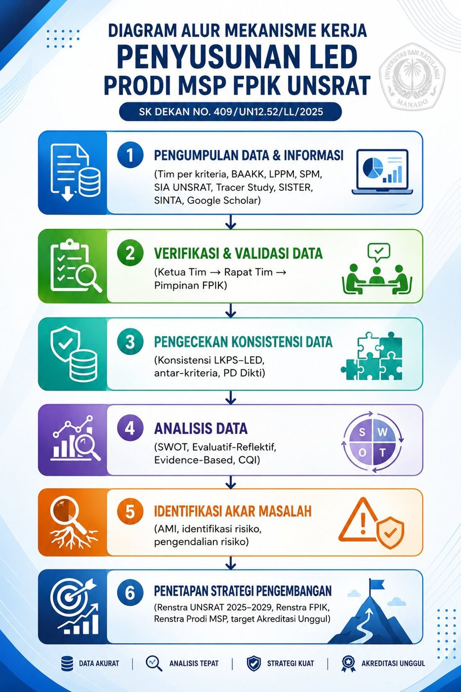
PerbesarBudaya Mutu
Sistem penjaminan mutu UPPS: organ, perangkat SPMI, siklus PPEPP, perbaikan berkelanjutan, dan kepuasan stakeholder.
LED PS MSP 2026 · hal. 23–34
A. Organ dan tupoksi penjaminan mutu UPPS
| Organ | Tupoksi |
|---|---|
| Dekan FPIK | Penanggung jawab tertinggi sistem manajemen mutu; mengesahkan dokumen mutu, menjamin sumber daya |
| Wakil Dekan I — Koordinator Sistem | Koordinasi implementasi SMOP ISO 21001:2018; memantau SOP, memeriksa kotak saran bulanan, menerbitkan permintaan tindakan koreksi |
| Kepala Laboratorium Penjaminan Mutu | Pelaksana teknis: audit internal, verifikasi tindakan perbaikan, catatan mutu FM/FPIK, arsip rekaman SMOP |
| Koordinator Program Studi | Implementasi mutu di PS MSP; laporan capaian sasaran mutu per periode |
| Kepala Bagian | Administrasi umum, persuratan, dan kearsipan pendukung sistem mutu |
A. Perangkat SPMI: kebijakan & pedoman PPEPP
- Kebijakan SPMI: Kebijakan SMOP (Lamp. 6-M-SMOP/FPIK-UNSRAT) dengan 9 komitmen mutu — mengacu SN-Dikti, BAN-PT/LAM PTIP, SPMI UNSRAT, dan ISO 21001:2018.
- Pedoman PPEPP: Manual SMOP FPIK sebagai dokumen induk seluruh SOP.
- Penetapan → Sasaran SMOP & Rencana Mutu (Lamp. 9); Pelaksanaan → 15 SOP akademik & non-akademik; Evaluasi → SOP Audit Internal; Pengendalian → SOP pengendalian dokumen; Peningkatan → SOP penanganan keluhan & tindakan koreksi.
- Identifikasi Isu Internal & Eksternal (Lamp. 1) pada 6 dimensi.
A. Perangkat SPMI: standar mutu & pendokumentasian
- Standar berlapis: (i) SN-Dikti — Permendiktisaintek 39/2025; (ii) Standar UNSRAT & ISO 21001:2018; (iii) Sasaran Mutu SMOP — 21 indikator dalam 5 program strategis; (iv) IAPS 1.0 LAM PTIP.
- Penomoran baku: M-SMOP, Lamp-[X], SOP/FPIK/PS, SOP/FPIK/KS, FM/FPIK, SM/FPIK-UNSRAT.
- Rekaman mutu: program, rencana, check list, temuan & log audit (FM/FPIK/KPM/03/01–05); formulir tindakan koreksi (FM/FPIK/KS/05/01).
- Distribusi dokumen ke 12 pihak; arsip digital via Portal INSPIRE; rekaman AMI diarsipkan di Lab. Penjaminan Mutu.
- Kesimpulan: seluruh komponen tata kelola penjaminan mutu terpenuhi.
B. Siklus PPEPP — bidang akademik
| Tahap | Pendidikan | Penelitian | PkM |
|---|---|---|---|
| Penetapan | Kebijakan SMOP; SOP Perencanaan Kurikulum; target IPK ≥ 3,40, studi ≤ 4 th, TOEFL ≥ 420, terserap ≥ 70% | Roadmap Penelitian FPIK 2023–2027; hibah kompetitif ≥ 5/th; kolaborasi internasional ≥ 3/th | SOP/FPIK/PS/15; PkM internasional ≥ 3/th; roadmap selaras penelitian |
| Pelaksanaan | RPS di Portal INSPIRE; SOP ujian skripsi; Kurikulum MBKM-OBE 2024 | PNBP, DRTPM, BRIN; alur SOP/FPIK/PS/15; mahasiswa via skripsi | PNBP & hibah; mahasiswa via KKN-Tematik |
| Evaluasi | EDOM; survei kepuasan; AMI Siklus XI (2023) & XII (2025) | Review BKD; KPI riset dalam AMI; monitoring LPPM | Laporan akhir LPPM; AMI |
| Pengendalian | PTK AMI XII (data DTPS & kelulusan tepat waktu); monitoring Rencana Mutu | Review LPPM & reviewer eksternal | Kontrak kinerja; laporan sebagai syarat pencairan |
| Peningkatan | Case method/TBP 95% MK; MBKM 15%; revisi kurikulum | ScienceDirect; kolaborasi internasional | Kerjasama Pemda & nelayan; desa binaan |
B. Siklus PPEPP — bidang non-akademik
| Bidang | Penetapan → Pelaksanaan → Evaluasi → Pengendalian → Peningkatan |
|---|---|
| Organisasi | Statuta, OTK, Renstra; target prodi terakreditasi 100%, SAKIP BB ≥ 80 → struktur organisasi & SOP persuratan → SAKIP, AMI, survei ZI Des 2025 → Tim SPIP, Satgas pengaduan, WBS → pembangunan ZI berkelanjutan |
| Keuangan | Perlem 4/2024, Pertor 02/2015; kinerja anggaran ≥ 95% → SIMPOK → laporan & SAKIP → SPIP dan audit internal → anggaran berbasis kinerja |
| Kemahasiswaan | Peraturan akademik, tata tertib, SOP beasiswa & ORMAWA → layanan INSPIRE, beasiswa KIP-K, poliklinik, karir → survei kepuasan → SOP pengaduan & keluhan → fasilitas disabilitas, beasiswa, karir |
| Ketenagaan | SOP Manajemen SDM, penghargaan, pembinaan; kode etik → siklus rekrutmen–promosi → BKD, SKP, EDOM → pembinaan kinerja → serdos, studi S3, pelatihan |
| Sarana prasarana | Pertor 02/2015; SOP perawatan; persyaratan minimal → laboratorium & pelatihan selam → survei kepuasan sarpras → pencatatan BMN → hibah peralatan & kerjasama fasilitas |
C. Perbaikan berkelanjutan, RTM, dan benchmarking
- Perbaikan 1: temuan AMI Siklus XII (data DTPS & kelulusan tepat waktu) → PTK oleh Korprodi → verifikasi ulang data bersama BAAKK & PD Dikti.
- Perbaikan 2: survei kepuasan Genap 2023/2024 (sarana laboratorium) → hibah peralatan Kemendiktisaintek & realokasi PNBP.
- Perbaikan 3: indeks kepuasan mahasiswa terendah (3,40, Tabel 2.7C) → intensifikasi bimbingan akademik dan kegiatan kemahasiswaan terstruktur.
- RTM setiap semester: Dekan, 3 WD, Korprodi, Ka. Lab. Penjaminan Mutu — evaluasi Sasaran Mutu, hasil AMI, umpan balik stakeholder.
- Benchmarking eksternal: direncanakan dengan fakultas sejenis terakreditasi Unggul (tata kelola laboratorium, integrasi penelitian–pembelajaran).
D. Kepuasan stakeholder — enam aspek
- 1. Instrumen kuesioner skala 1–4 untuk 7 kelompok stakeholder, diadministrasikan Lab. Penjaminan Mutu FPIK.
- 2. Berkala setiap semester (TS-2, TS-1, TS); responden mahasiswa naik 30 → 60.
- 3. Analisis indeks kepuasan rata-rata tertimbang per kelompok.
- 4. Tindak lanjut spesifik per kelompok (kurikulum & magang, pelatihan tendik, kerjasama mitra, tracer & forum alumni).
- 5. Review pengukuran setiap akhir semester dalam RTM.
- 6. Publikasi hasil melalui Portal INSPIRE dan rapat koordinasi.
Relevansi
Relevansi pendidikan, penelitian, dan pengabdian kepada masyarakat terhadap kebutuhan pemangku kepentingan dan perkembangan IPTEK.
LED PS MSP 2026 · hal. 34–178
Relevansi Pendidikan
Kurikulum OBE, SDM, sarana-prasarana, laboratorium, proses pembelajaran, capaian, dan dampak lulusan.
LED PS MSP 2026 · hal. 34–129
A. Keterlibatan pemangku kepentingan dalam kurikulum OBE
- Evaluasi mayor 2024 menghasilkan Kurikulum 2024 berbasis OBE & MBKM, menggantikan Kurikulum 2020 (Buku Kurikulum MBKM PS MSP 2024; SOP/FPIK/PS/02).
- Empat jalur masukan: tracer study (LPKA UNSRAT), survei mahasiswa–alumni–pengguna, kunjungan & observasi instansi pengguna, serta forum diskusi/hearing.
- Pemangku kepentingan internal (dosen, mahasiswa, tendik) dan eksternal (alumni, pengguna, asosiasi, industri, pakar).
- Siklus SOP: evaluasi berjalan → kajian kebutuhan → revisi → pengesahan → implementasi → pemantauan.
A. Masukan stakeholder yang diimplementasikan
| Sumber | Masukan → Implementasi dalam Kurikulum 2024 |
|---|---|
| Mahasiswa | Keterkaitan antar-MK → curriculum mapping & capstone design; inkonsistensi materi → standardisasi RPS & rubrik; preferensi blended → modalitas kombinasi |
| Alumni | Lintas bidang → basic science & MBKM; komunikasi → MK komunikasi ilmiah; kerja tim → PBL & collaborative learning; manajerial → penguatan CPL7 |
| Dosen | Penguatan bidang manajemen → restrukturisasi bahan kajian berbasis BoK; perbaikan RPS → review tiap semester dalam PPEPP |
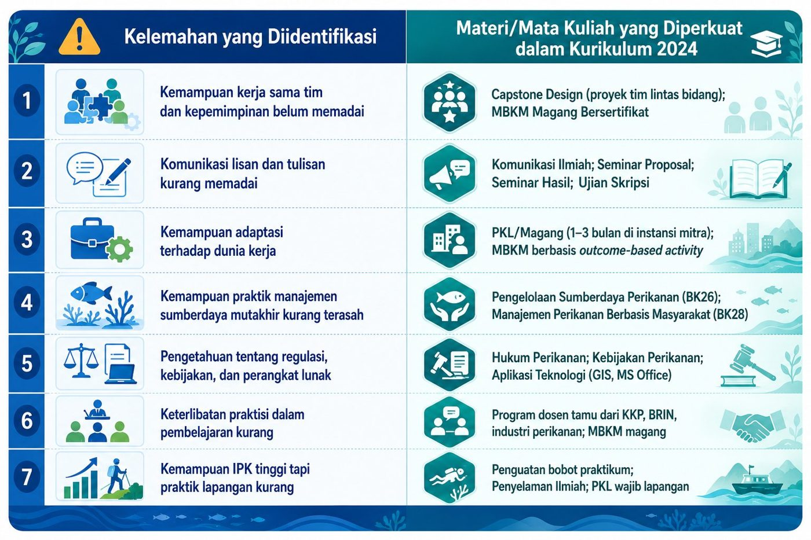
PerbesarA. Tahapan penyusunan & implementasi OBE
- Tahap 1 — Profil lulusan: PL1 Asisten Peneliti, Analis & Pendidik; PL2 Konsultan Lingkungan Perairan & Perikanan; PL3 Praktisi SD Perairan & Perikanan; PL4 Manajer/Wirausahawan Perikanan.
- Tahap 2 — CPL: 8 CPL (sikap, pengetahuan, keterampilan umum & khusus) selaras KKNI level 6 dan SN-Dikti; format Expected Learning Outcomes (ABET, AUN-QA).
- Tahap 3 — Bahan kajian & struktur: basic science, capstone design, muatan TI, MBKM (maks. 3 semester di luar prodi).
- OBE utuh: outcome-based curriculum, learning & teaching (SCL, PBL), dan assessment (rubrik per CPMK).
- Keberlanjutan melalui AMI Siklus XI & XII serta umpan balik mitra (FAO, EDF, USAID).
B. Kesesuaian CPL dengan profil lulusan & KKNI
- Landasan: Perpres 8/2012 KKNI, Permendikbud 73/2013, Permendikbud 3/2020, Panduan Kurikulum Dikti 2020 — S1 = KKNI Level 6.
- Matriks CPL–PL: setiap profil didukung ≥ 2 CPL; CPL 7 (kerjasama & disiplin) relevan bagi seluruh profil.
- 28 sub-CPL dalam empat domain: Sikap 11 · Pengetahuan 6 · Keterampilan Umum 6 · Keterampilan Khusus 5.
- Keunikan lokal sebagai diferensiasi: Koralogi, Limnologi, Penyelaman Ilmiah, Konservasi SDH Perairan, Manajemen Pesisir & Laut, Manajemen Pulau-pulau Kecil.
C. Struktur, muatan, dan materi kurikulum (1)
- 1) CPL: 8 CPL, 28 sub-CPL; RPS seluruh mata kuliah mencantumkan CPL yang dibebankan.
- 2) Masa tempuh: 8 semester, minimal 144 SKS — 121 wajib prodi, 8 wajib nasional, 6 wajib universitas, ≥ 9 pilihan dari 24 SKS; PKL 4, KKT 4, Skripsi 6 SKS; MBKM maks. 40 SKS.
- 3) Metode: SCL — ceramah interaktif, diskusi, presentasi, PBL, collaborative learning, praktikum, penyelaman ilmiah; dipantau via INSPIRE dan AMI.
- 4) Modalitas: blended — luring 16 pertemuan, daring asinkron & sinkron, praktik lapangan/MBKM.
C. Struktur, muatan, dan materi kurikulum (2)
- 5) Syarat calon mahasiswa: ijazah SMA/MA/SMK; lulus SNBP/SNBT/mandiri; non-diskriminatif (Statuta Pasal 12); kuota afirmatif KIP-K, 3T, disabilitas.
- 6) Penilaian: formatif, sumatif (UTS/UAS), praktikum, capstone skripsi, PKL & KKT; rubrik per CPMK; EDOM tiap semester.
- 7) Materi: BoK MSP — ilmu dasar, ilmu keahlian, ilmu pendukung (GIS & remote sensing, statistika), pengembangan diri.
- 8) Tata cara penerimaan: SNBP, SNBT, mandiri (SOP/FPIK/PS/01); juga transfer kredit, kerja sama antar-PT, mahasiswa asing, pertukaran MBKM.
D. Kesesuaian kurikulum dengan SDGs
| SDG | Kontribusi mata kuliah PS MSP |
|---|---|
| 1 Tanpa kemiskinan | Ekonomi Sumberdaya Perairan, Kewirausahaan Perikanan |
| 2 Tanpa kelaparan | Pengelolaan Stok Ikan, Budidaya Berkelanjutan |
| 3 Kesehatan | Toksikologi Perairan, Kualitas Air |
| 6 Air bersih | Limnologi, Kualitas Air, Pengelolaan DAS |
| 8 Pekerjaan layak | MBKM/Magang, Kewirausahaan, Ekowisata |
| 13 Iklim | Dampak Perubahan Iklim, Ekologi Bentos, Karbon Biru |
| 14 Kehidupan bawah air | Koralogi, Konservasi, Penyelaman Ilmiah, Manajemen Pesisir |
| 15 Kehidupan di darat | Limnologi, Danau Tropis, Rehabilitasi Mangrove |
| 16 Perdamaian & keadilan | Hukum Perikanan, Etika Profesi |
| 17 Kemitraan | MBKM, kerjasama CTI-CFF, FAO, USAID |
Kedalaman & keluasan materi: dasar keilmuan & IPTEK mutakhir
- Dibuktikan melalui BoK (14 kelompok bahan kajian), RPS terstruktur, dan evaluasi berkala (workshop MK, EPOM).
- Dasar keilmuan: sensor IoT kualitas air, SIG & penginderaan jauh, big data & analitika, model prediktif (von Bertalanffy, produksi surplus, swept area, mark-recapture).
- IPTEK mutakhir: AUV/ROV dalam Penyelaman Ilmiah, nanosensor polutan, blockchain untuk ketertelusuran perikanan, bioinformatika, bio-remediasi, model simulasi multi-skala.
- Target SMOP: 95% MK S1 menggunakan case method/team-based project.
Kedalaman & keluasan materi: riset terkini & dunia kerja
- Konsep baru dari riset: 299 karya ilmiah DTPS 2023–2025 menjadi bahan kajian; penelitian DTPS melibatkan mahasiswa; buku ajar ber-ISBN.
- Contoh RPS: Koralogi (sebaran terumbu Sulut), Konservasi SD Perairan (transplantasi karang Bunaken), Dinamika Populasi Ikan (data lapangan Sulut).
- Dunia kerja: pemetaan profil lulusan ke instansi (BRIN, KKP, BPSPL, Dinas KP, LSM), materi berbasis FGD pengguna, kompetensi abad-21, MBKM hingga 20 SKS.
- Hasil evaluasi internal: rating 4,00 untuk aspek kedalaman & keluasan materi.
Rencana strategis SDM: dosen
- Pedagogik: penugasan sesuai keahlian; RPS mengacu CPL; Pekerti/AA dan workshop digital learning (LPPMP).
- Kepribadian & sosial: Kode Etik Dosen (Lamp. 15); BKD tiap semester & SKP tahunan; laporan BKD Genap 2024/2025 No. 1535/UN12.5/LL/2025.
- Profesional: studi S3, seminar & konferensi, kolaborasi riset (PNBP, DRTPM, BRIN, USAID, Kyushu University), penghargaan publikasi.
- Kualifikasi: 16 DTPS — 13 doktor (81,25%), 3 magister; seluruhnya minimal Lektor.
- Rencana pengembangan: studi lanjut S3, pembinaan jabatan ke LK/GB, sertifikasi pendidik.
Rencana strategis SDM: tenaga kependidikan
- Dikoordinasikan WD Umum & Keuangan berdasarkan SOP Manajemen SDM dan Rencana Pengembangan Dosen & Tendik.
- LED mencatat tendik FPIK lintas fungsi layanan; 50% bergolongan III ke atas; laboran bersertifikat kompetensi.
- Empat jalur pengembangan: teknis (administrasi, laboratorium & K3, BMN, TI), layanan (layanan prima, ZI/WBBM), manajerial (tata kelola, audit mutu), karier (jabatan fungsional, SKP, pembinaan kinerja — PP 30/2019).
- Rekrutmen melalui formasi CPNS berdasarkan analisis kebutuhan tahunan unit kerja.
Kecukupan DTPS (Tabel 2.1A)
- NDTPS = 16 → melampaui ambang Unggul (≥ 12) sebesar 33,3% → Skor 4.
- 81,25% doktor; 3 guru besar (Lumingas, Pratasik, Kepel); 87,5% kesesuaian bidang dengan kompetensi inti.
- Kepakaran luas: ekologi laut & bentik, tumbuhan air, limnologi, oseanografi, gastropoda, lamun, terumbu, pesisir, valuasi.
- Sertifikasi tambahan: Asesor BKD, AMDAL A, EAFM, Penyelia Halal, sertifikasi profesi.
- DTPS juga mengajar di S2 Ilmu Perairan dan S3 Ilmu Kelautan.
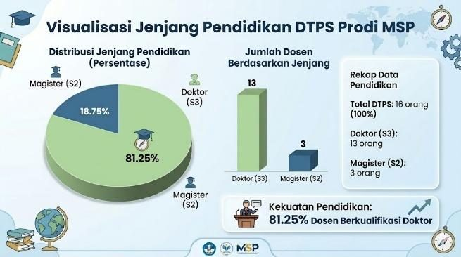
PerbesarKesesuaian bidang keahlian dengan kompetensi inti PS
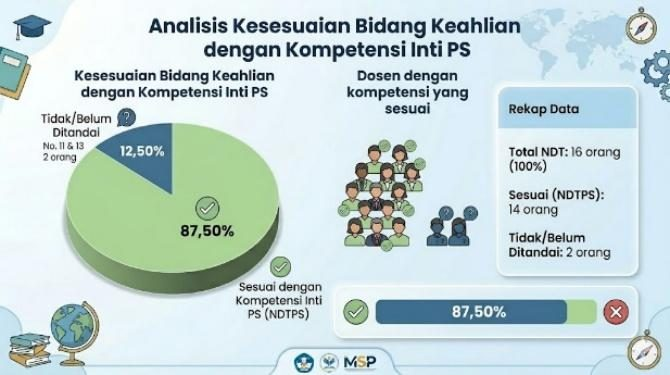
PerbesarFormula penilaian kecukupan DTPS IAPS 1.0
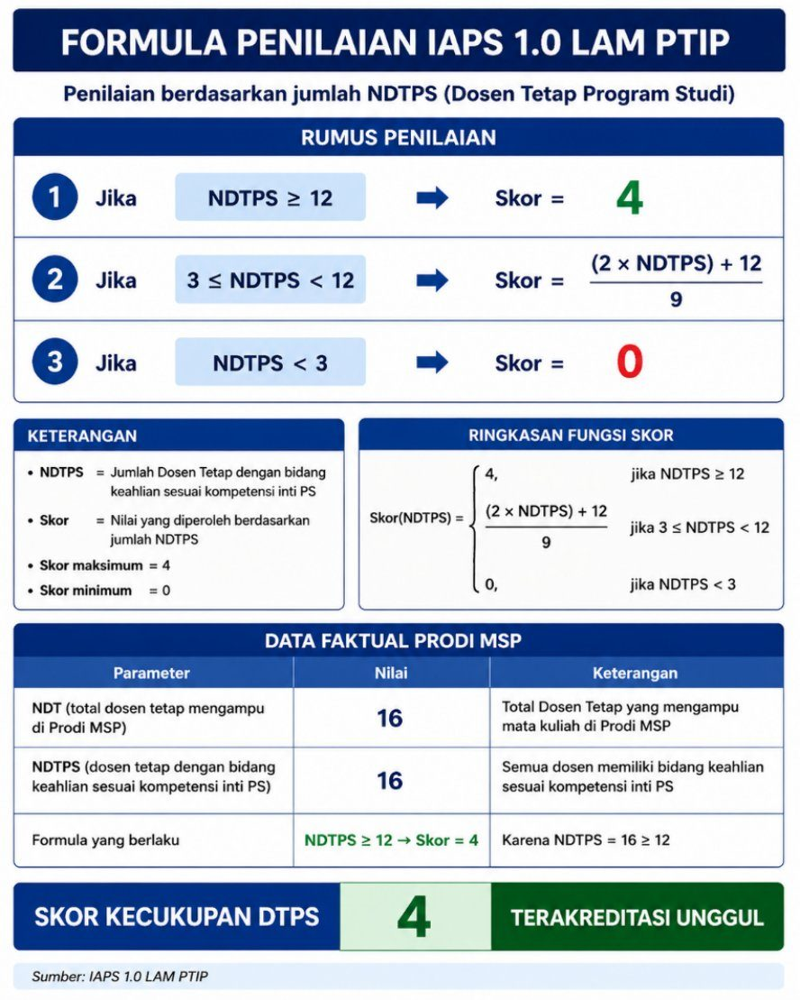
PerbesarKeterlibatan dosen tidak tetap (Tabel 2.1B)
- NDTT = 0 → PDTT = 0% → Skor 4.
- Kemandirian akademik penuh: seluruh MK diampu 16 DTPS dengan 16 bidang kepakaran.
- Beban kerja DTPS 13–15 SKS/semester (EWMP) sesuai standar BKD nasional.
- Pengayaan tanpa status DTT: kuliah tamu Nitto Seimo Co. Ltd (Jepang), dosen tamu UGM & IPB, pembimbing lapangan KKP/BRIN/BPSPL/Dinas KP, MBKM Kyushu University.
- Tabel 2.1C (dosen industri) dan 2.1D (tutor PJJ) tidak berlaku untuk program Sarjana.
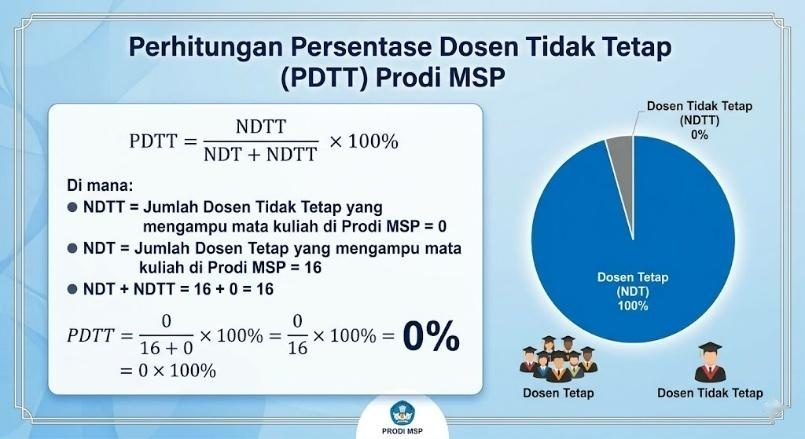
PerbesarSarana prasarana untuk mahasiswa & dosen
- Ruang kuliah kelas A (AC, LCD, wifi): 73% mahasiswa menilai baik–sangat baik; WiFi & INSPIRE 80%; fasilitas umum 74%.
- Lab. Bioekologi Perairan: koleksi > 1.000 jenis spesimen dengan Reference Collection Room (metadata Museum Bonn, Jerman).
- LP3K terakreditasi KAN; akses UPT Lab. Terpadu (HPLC, XRF, FTIR, UV-VIS) dengan tarif SK Rektor 339/UN12/LL/2025.
- Ruang kerja dosen; distribusi MK & BKD via SOP No. 29; inventaris LP3K 33 alat utama; BMN dicatat di SABMN.
- Portal INSPIRE terintegrasi untuk RPS, nilai, kehadiran, BKD.
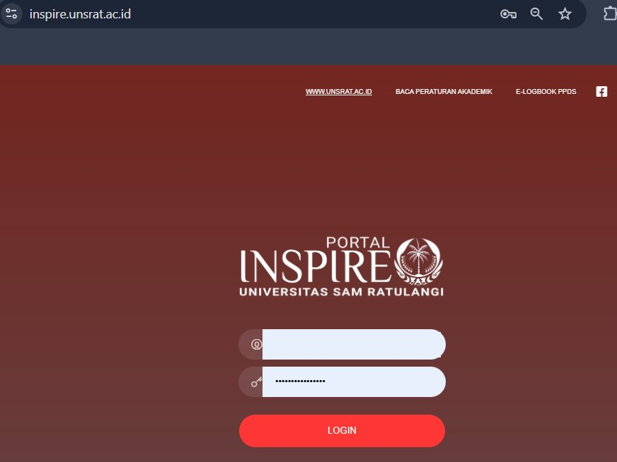
Perbesar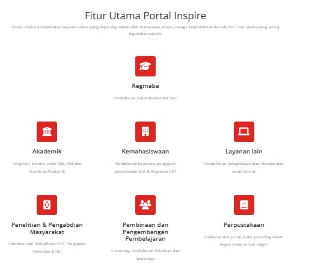
PerbesarSarpras ramah difabel, K3, bencana, dan limbah B3
- Difabel: ramp, toilet difabel, SOP Layanan Mahasiswa Disabilitas; tata tertib anti-diskriminasi.
- K3: 10 SOP K3 laboratorium (Rencana Pembangunan ZI 2025–2026); peralatan berbahaya hanya dioperasikan personel terlatih.
- Kebakaran & bencana: SOP Tanggap Darurat Laboratorium (No. 43), jalur evakuasi, APAR; SOP K3 Penelitian Lapangan Marine & Coastal (No. 38).
- Limbah: SOP Pengelolaan B3 (No. 37), lemari asam LP3K, SOP Biosafety (No. 41); kebersihan kontraktual.
Laboratorium: kebijakan dan jaringan
| Kelompok | Laboratorium |
|---|---|
| Utama PS MSP | Bioekologi Perairan · Bioteknologi & Farmasitika Laut · Pesisir & Pulau-pulau Kecil · Sosial Ekonomi Perikanan · Teknologi Pengolahan & Pengendalian Mutu · Marine Field Station Likupang |
| Pendukung | Teknologi Akuakultur · Rekayasa Perikanan Tangkap · Penjaminan Mutu · LP3K (terakreditasi KAN) |
| Tingkat universitas | UPT Laboratorium Terpadu (SK Rektor 2084/UN12/LL/2022) · Laboratorium Biomolekuler (BSL-2+, PCR, DNA barcoding, eDNA) |
Laboratorium: standar, modul, dan bukti penggunaan
- Standar pengelolaan: SOP 15, 16, 36–45, 46–54; audit K3 bulanan & tahunan; alur pengajuan baku; LP3K terakreditasi KAN.
- Modul praktikum: Biologi Perikanan, Planktonologi, Manajemen Pesisir & Laut, Botani Akuatik, Penyelaman Ilmiah (Open Water, Rescue, survei terumbu & ikan karang), Dinamika Populasi, Ekowisata.
- Bukti sahih: logbook, jadwal praktikum di KRS, laporan praktikum, data skripsi, laporan riset dosen.
- Kepuasan mahasiswa terhadap laboratorium: 65% sangat baik/baik → dasar perbaikan sarpras.
- Kesimpulan: kelima kriteria laboratorium terpenuhi (syarat perlu Unggul).
Ketersediaan & kelengkapan RPS
- Landasan: Panduan Kurikulum Era 4.0 & MBKM UNSRAT (LP3, 2024) dan Buku Kurikulum PS MSP 2024 — RPS menjadi acuan 16 kali tatap muka.
- Seluruh MK dalam 8 semester memiliki RPS yang tersimpan di Portal INSPIRE; "RPS seluruh MK disajikan pada Lampiran" Buku Kurikulum.
- Komponen lengkap: ① CPL & CPMK ② bahan kajian per pertemuan ③ metode SCL (case method, TBP) ④ waktu & tahapan ⑤ asesmen & bobot.
- IKU 7 (MK dengan case method/TBP) mencapai 88% pada 2024, melampaui target 80%.
- Peninjauan: EPOM tiap semester; revisi kurikulum 2015 → 2020 → 2024; konsistensi dipantau INSPIRE & AMI.
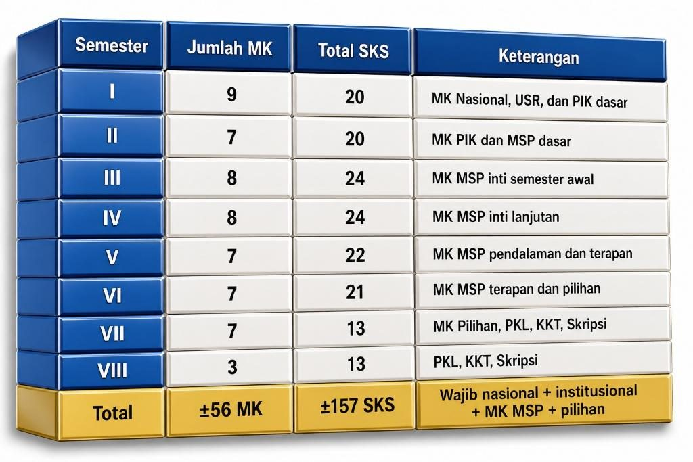
PerbesarRekapitulasi pemenuhan indikator 11 (RPS)
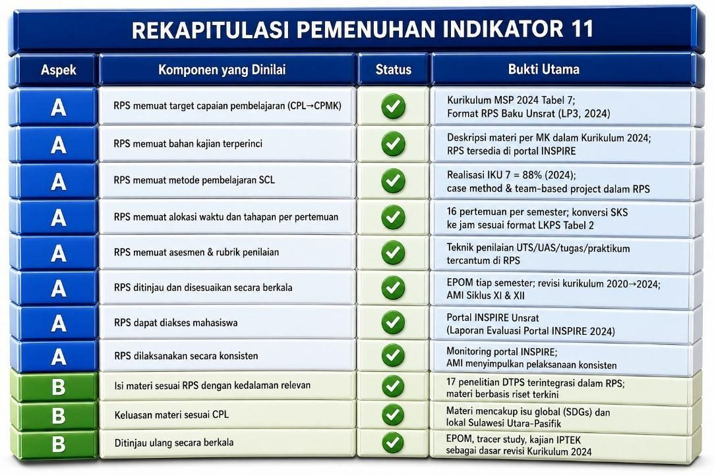
PerbesarKedalaman & keluasan RPS sesuai CPL
- Kerangka: deskriptor KKNI level 6, BoK PS MSP, hasil tracer & kajian IPTEK; bahan kajian disusun setelah CPL.
- Empat dimensi kedalaman: IPTEK dasar (smt I–IV) · IPTEK mutakhir (remote sensing, GIS, PCR, DNA barcoding) · riset DTPS terintegrasi · kebutuhan dunia kerja (AMDAL, valuasi, pulau kecil).
- Keluasan: pemetaan CPL ke seluruh MK (Tabel 3 & 7 Kurikulum 2024); konteks Bunaken, Lembeh, Minahasa, Tondano–Moat, Coral Triangle, dan isu global.
- Bukti kesesuaian: EPOM, monitoring INSPIRE, workshop evaluasi kurikulum.
- Peninjauan berjenjang: semester (EPOM), tahunan (rapat evaluasi Kaprodi), periodik 4–5 tahun (revisi kurikulum).
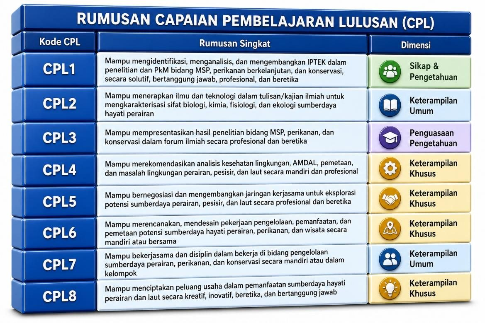
PerbesarRekapitulasi kedalaman dan keluasan RPS
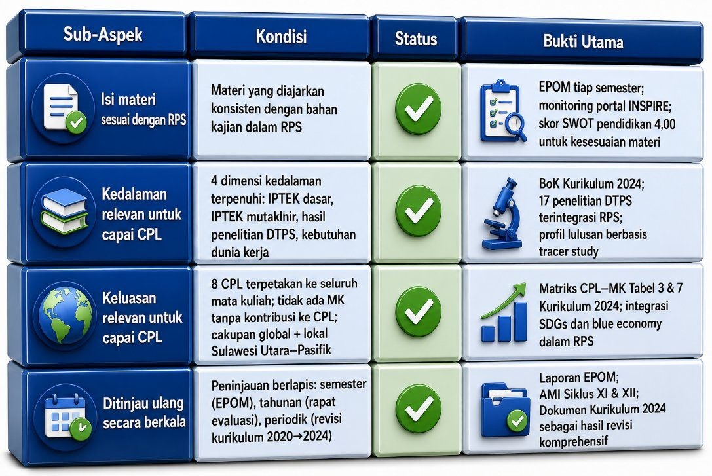
PerbesarPelaksanaan pembelajaran luring & daring
- Landasan: Statuta UNSRAT Pasal 10 (SCL) dan Peraturan Akademik Pasal 53–54 (ragam cara pembelajaran, daring).
- Luring: persiapan (KRS, RPS, modul) → 16 pertemuan × 100 menit (ceramah, diskusi, kuis, tugas, presentasi, praktikum, PkM) → input nilai & KHS di INSPIRE.
- Pembelajaran lapangan khas: Bunaken, Selat Lembeh, pesisir Minahasa Selatan & Bolaang Mongondow, Danau Tondano & Moat.
- Daring: SEL UNSRAT terintegrasi INSPIRE — sinkron (video conference) dan asinkron (LMS, modul e-learning & multimedia).
- Dokumentasi: KRS, kehadiran, bahan ajar, nilai, KHS; SK dosen pengajar, PA, dan penguji.
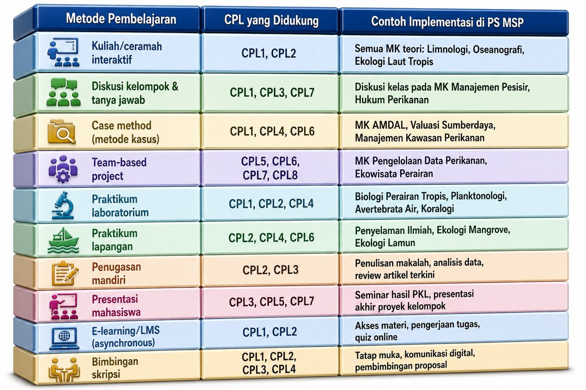
PerbesarKesesuaian metode dengan CPL & pemantauan berkala
- SCL berbasis PBL & integrated learning (Pertor 1/2025 Pasal 53); IKU 7 naik 40% (2022) → 88% (2024); target SMOP 95%.
- Bukti: Matriks CPL–Bahan Kajian–Metode (Tabel 7 Kurikulum 2024) dan EDOM 2023–2024.
- EDOM: pedagogik 97,3%, profesional 97,6%, kepribadian 97,5%, sosial 97,3% puas–sangat puas.
- Pemantauan berlapis: kehadiran real-time INSPIRE → rapat evaluasi bulanan PS → monitoring WD Akademik → EPOM, EDOM, AMI.
- Kepuasan mahasiswa terhadap proses pendidikan: 92% sangat baik dan baik.
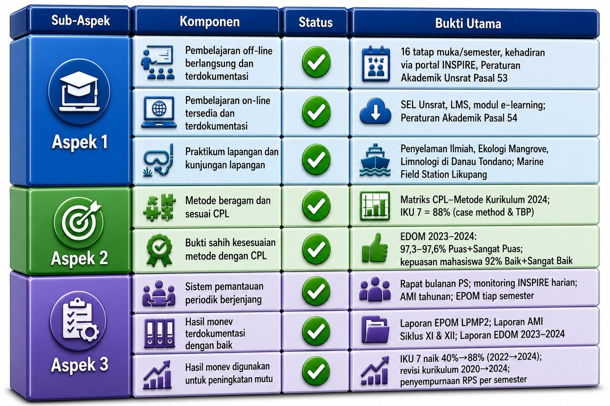
PerbesarKegiatan di luar pembelajaran terstruktur
- HIMASUPER — himpunan mahasiswa dengan SOP Kegiatan ORMAWA (selaras ISO 21001).
- Kuliah umum "Blue Carbon Solution for Climate Mitigation" (Nov 2023); seminar FPIK & universitas.
- Pelatihan selam SSI Open Water 18–21 Juni 2025: 17 mahasiswa angkatan 2023–2024 lulus lisensi A1 (mitra Minanga Divers; ujian di TN Bunaken).
- Program FPIK: PKM, LKTI, Mawapres, ONMIPA, seminar internasional, KKT.
- Riset bersama dosen di Bunaken, Lembeh, Tondano; kegiatan Zona Integritas (kampanye anti-korupsi, lomba poster).
- Target: minimal satu kegiatan ilmiah setiap bulan.
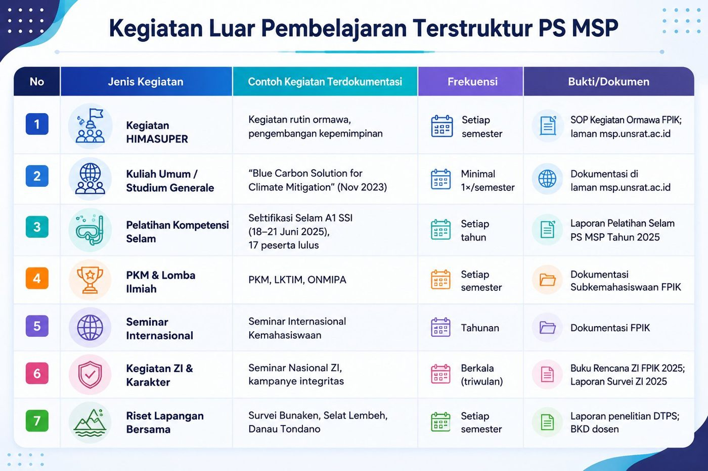
PerbesarMutu, teknik, dan instrumen penilaian
- Landasan: Peraturan Akademik Pasal 56–59.
- 8 prinsip: edukatif, otentik (tugas lapangan Bunaken–Lembeh–Tondano), objektif (rubrik bersama), akuntabel (SIAT & INSPIRE), transparan (kontrak kuliah), valid, reliabel, berkeadilan.
- Teknik: observasi, partisipasi, unjuk kerja, tes tertulis, tes lisan, angket.
- Instrumen: rubrik pada 45 MK berpraktikum (80,4%); portofolio (Seminar, PKL, Skripsi, analisis data); karya desain (AMDAL, Manajemen Pesisir, Pulau Kecil, Ekowisata).
- Kesesuaian teknik & instrumen ≥ 75% MK → Skor 4.
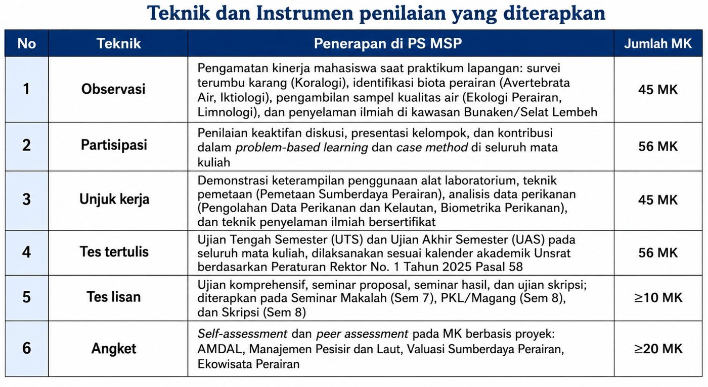
PerbesarTujuh unsur pelaksanaan penilaian
- ① Kontrak rencana penilaian di pertemuan pertama · ② pelaksanaan sesuai kontrak (UTS/UAS terjadwal WD I).
- ③ Umpan balik ≤ 2 minggu dan hak keberatan (Pasal 59 ayat 7) · ④ dokumentasi di SIAT & arsip fisik, KHS daring.
- ⑤ Prosedur lima tahap: perencanaan → tugas/soal → observasi → pengembalian hasil → nilai akhir.
- ⑥ Huruf & angka mutu A (4,0) s.d. E (0) · ⑦ perbaikan berbasis monev: EDOM, rapat prodi bulanan, AMI Siklus XII.
- Perbaikan nyata: standardisasi rubrik lapangan Ekologi Perairan & Koralogi (2024), komponen presentasi analisis data (2024), format kontrak kuliah seluruh MK (2025).
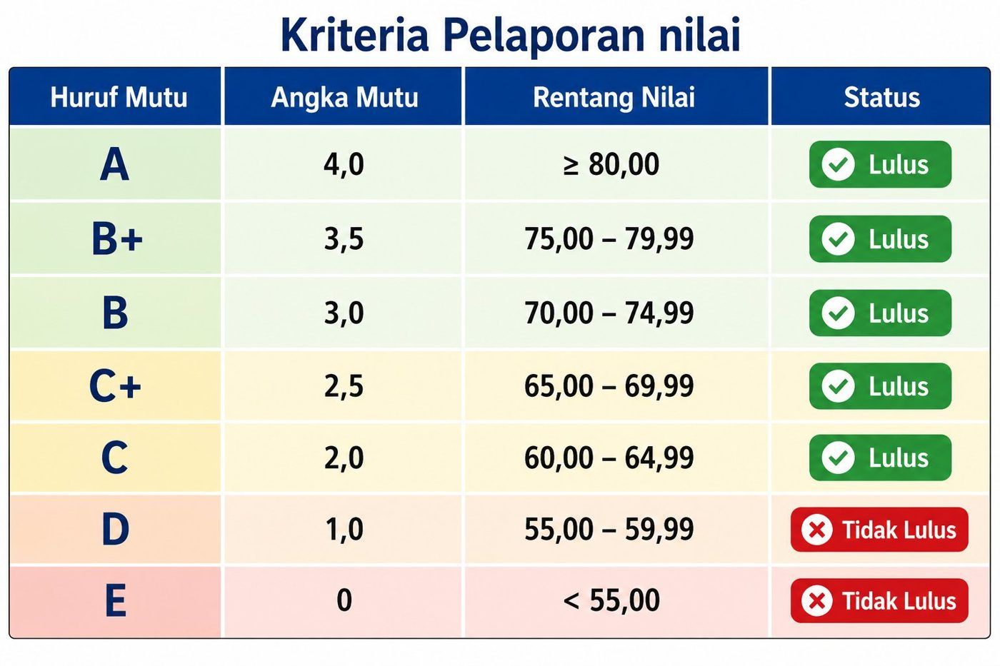
PerbesarIntegrasi penelitian & PkM dalam pembelajaran
- 36 entri integrasi: 29 dari penelitian dan 7 dari PkM, pada lebih dari 18 mata kuliah → melampaui ambang Skor 4 (> 10 MK).
- Tren entri: 10 (2023) → 8 (2024) → 18 (2025).
- Bentuk: tambahan materi 17 (47%), studi kasus 15 (42%), bahan ajar 3, bab buku ajar 1.
- Ekologi Lamun menerima 6 entri; Ekotoksikologi & Bioteknologi Kelautan 4; Rehabilitasi Ekosistem Laut 3.
- Lokasi riset: Bunaken, Teluk Manado, Likupang, Tongkaina, Tiwoho, Mantehage, Wori, Raja Ampat, Teluk Jailolo, Sangihe.
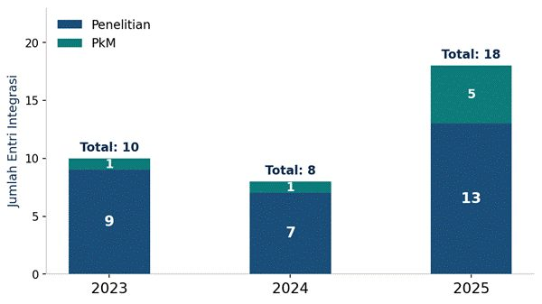
Perbesar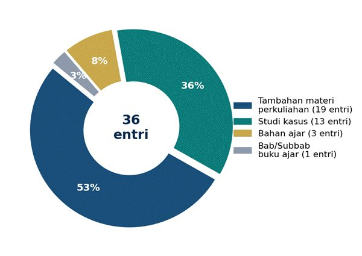
PerbesarSebaran entri integrasi per mata kuliah (Grafik 3)
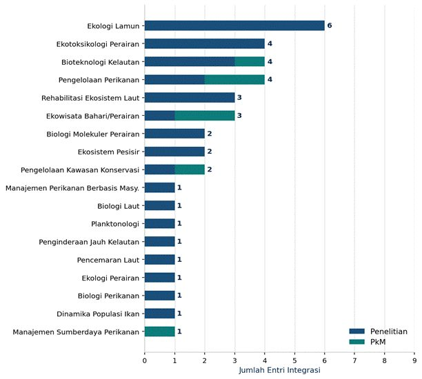
PerbesarKontribusi integrasi per DTPS (Grafik 4)
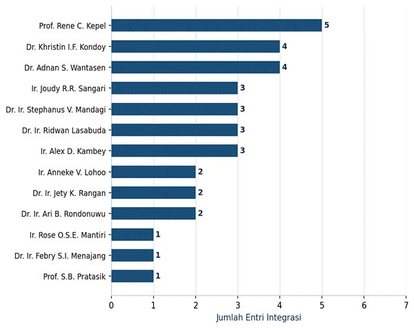
PerbesarPerbaikan berkelanjutan berdasarkan 5 aspek evaluasi
- 1. Aktivitas per angkatan: EDOM 2023/2024 — kompetensi profesional dosen MSP 99,6% puas; penguatan SCL dan integrasi riset.
- 2. Mahasiswa aktif: stabil 119–131; sosialisasi ke SMA di Sulut, Maluku, Papua; pendaftar TS-2 naik menjadi 41.
- 3. Masa tempuh: efisiensi distribusi SKS, jadwal seminar & sidang terstruktur, PA intensif.
- 4. Masa studi: 5,23 → 4,00 tahun; workshop metodologi, pembatasan bimbingan, digitalisasi proposal di SIAT; PTW angkatan TS-3 = 16/23 (69,6%).
- 5. Serapan kerja: 73,5% WT < 6 bulan; penguatan MK profesi, magang, jejaring alumni (WA group sejak 2017).
Kinerja mahasiswa per tahun masuk
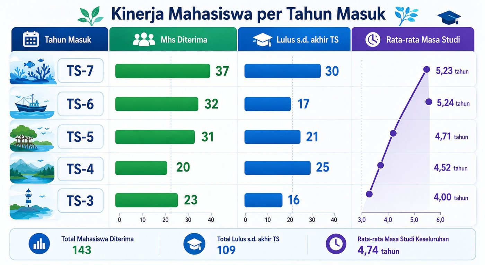
PerbesarKepesertaan mahasiswa MBKM (Tabel 2.2)
- 5 mahasiswa mengikuti MBKM saat TS, masing-masing 20 SKS: 3 Program Independen Bersertifikat (Jakarta, Alor, Palu–Wallacea) dan 2 International Training Course AMBL, Kyushu University.
- LED menghitung terhadap seluruh mahasiswa aktif: 5/119 ≈ 4,2%, di bawah ambang Skor 4 (≥ 15%) — dicatat sebagai catatan kritis.
- Tabel 2.2 LKPS mencatat jumlah mahasiswa eligible = 5 (kepesertaan 100% dari yang eligible).
- Roadmap akselerasi MBKM 2025–2027: roadshow semester 4–6, perluasan MoU (KKP, BRIN, CTI-CFF, IUCN), penyederhanaan konversi SKS, layanan informasi via INSPIRE.
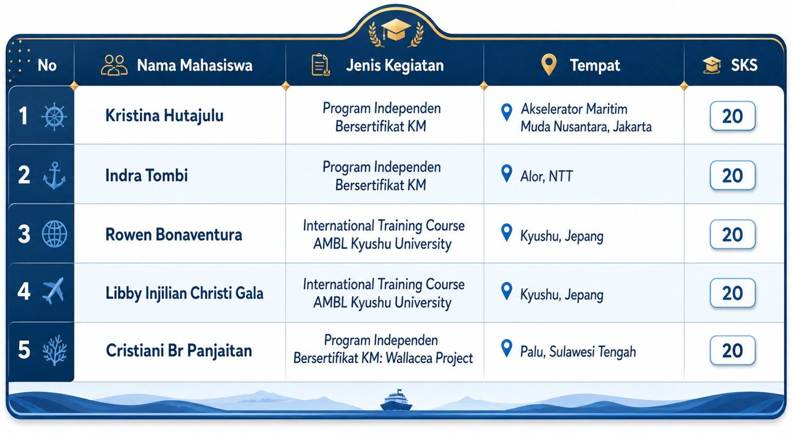
PerbesarPemenuhan CPL: keserbacakupan & kedalaman
- Keserbacakupan: 28 sub-CPL (Sikap 11, Pengetahuan 6, KU 6, KK 5) dipetakan ke profil lulusan; seluruh MK berkontribusi pada CPL.
- Pengukuran berlapis: rubrik formatif & sumatif, EPOM/EDOM, PKL/Magang, KKT, dan Skripsi sebagai capstone assessment.
- Kedalaman: OBE utuh (curriculum, learning & teaching, assessment); IPK rata-rata 3,60 → 3,61 → 3,74 dan IPK minimum 3,21 → 3,51.
- Masa studi 5,23 → 4,00 tahun sebagai indikator efektivitas pembelajaran.
- AMI Siklus XI & XII mengevaluasi kelulusan tepat waktu, keberhasilan studi, dan rasio dosen–mahasiswa; PTK ditindaklanjuti.
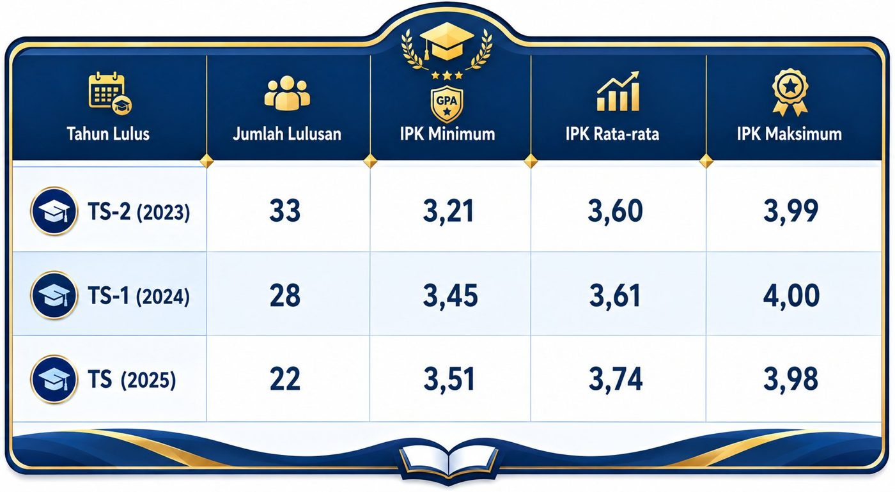
PerbesarKebermanfaatan analisis CPL (3 tahun terakhir)
- a. IPK rata-rata naik 0,14 poin; IPK minimum naik 0,30 poin.
- b. 34 dari 63 lulusan terlacak (54%); 73,5% waktu tunggu < 6 bulan; 0 lulusan > 18 bulan.
- c. Tempat kerja: 61,8% nasional, 17,6% multinasional/internasional (79,4% nasional ke atas).
- d. Kepuasan pengguna: kerjasama tim 100% sangat baik; bahasa asing 55,88% Sangat Baik (88,24% Baik+Sangat Baik) → ditindaklanjuti dalam Kurikulum 2024.
- e. Kesesuaian bidang kerja tinggi menurut tracer study PS MSP.
- PPEPP CPL dengan benchmarking ke IPB, UNDIP, Univ. Riau, serta Kyushu, Nagasaki, Kagoshima, Bremen, Oldenburg, dan UMT.
Rata-rata IPK lulusan (Tabel 2.3)
| Tahun lulus | Lulusan | IPK min | IPK rata-rata | IPK maks |
|---|---|---|---|---|
| TS-2 | 33 | 3,21 | 3,60 | 3,99 |
| TS-1 | 28 | 3,45 | 3,61 | 4,00 |
| TS | 22 | 3,51 | 3,74 | 3,98 |
| Tertimbang | 83 | 3,64 |
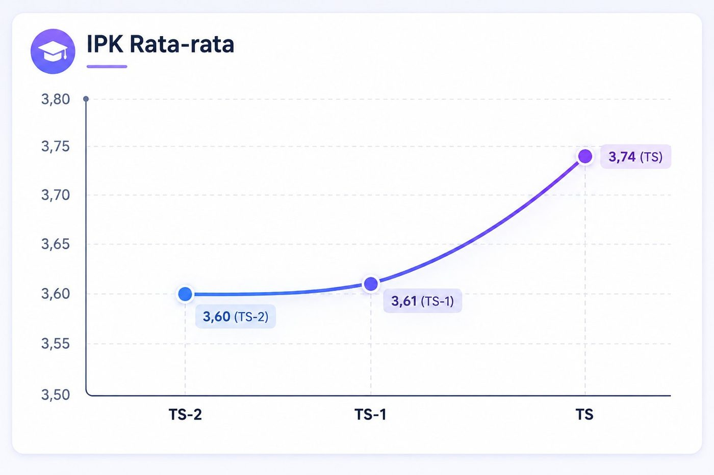
PerbesarPerhitungan rata-rata IPK tertimbang
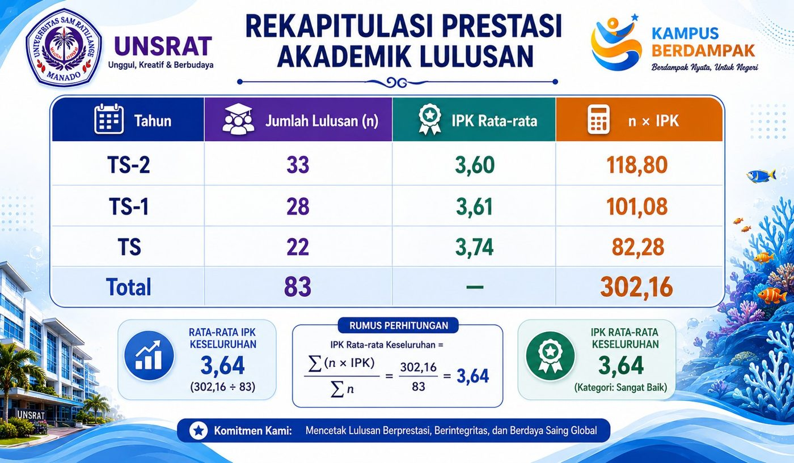
PerbesarPrestasi akademik mahasiswa (Tabel 2.4)
- 10 prestasi juara/medali oleh 5 mahasiswa (2021–2025).
- Yogi Rustandi — 5 medali di 4 kompetisi nasional (Emas POSI Fisika 2021; Perak KPPI, Perunggu ISO & Pra-KSN 2022) dan Emas debat FPIK.
- Regenerasi 2024–2025: Roberkat Simanulang (Juara I Kimia & III Biologi ONMIPA), Libby I. Ch. Gala (Juara I Biologi ONMIPA), Natasya Kusmanto (Juara III Fisika), Rowen Bonaventura (Juara I KTI FPIK 2025).
- Capaian tambahan: 4 kelompok PKM-K didanai Kemendikbudristek (2022); 2 mahasiswa International Training Course AMBL Kyushu University (JASSO).
- Penghambat yang diidentifikasi LED: tidak ada entri 2023, prestasi terkonsentrasi pada satu mahasiswa, belum ada prestasi nasional sejak 2022.
Capaian akademik tambahan dalam dokumen PS MSP
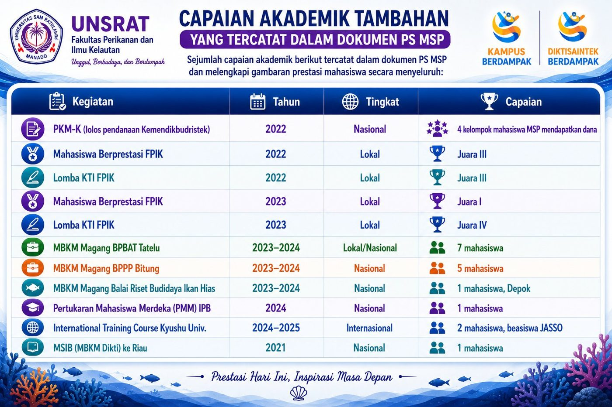
PerbesarGambaran umum dan tren keterlibatan 2021–2025
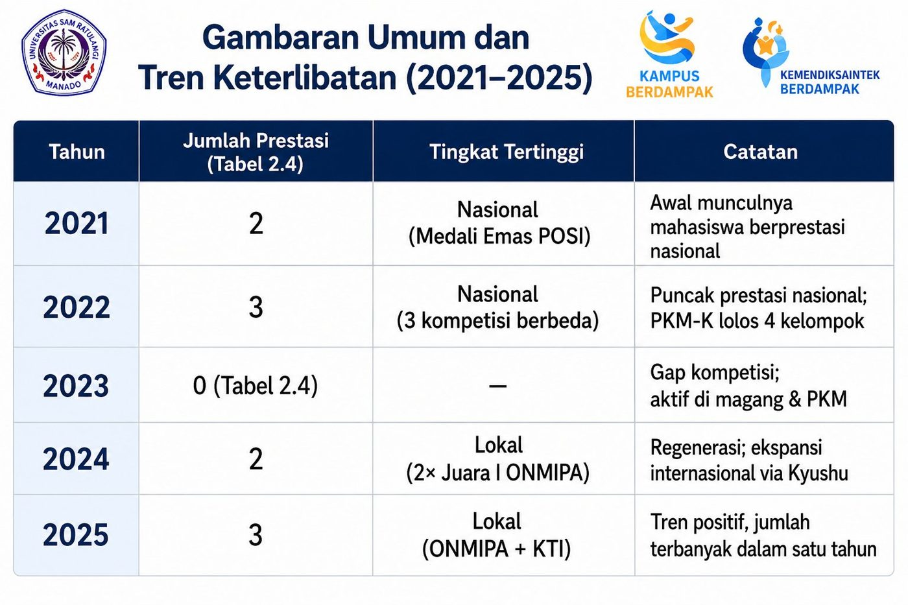
PerbesarRencana tindak lanjut peningkatan prestasi mahasiswa
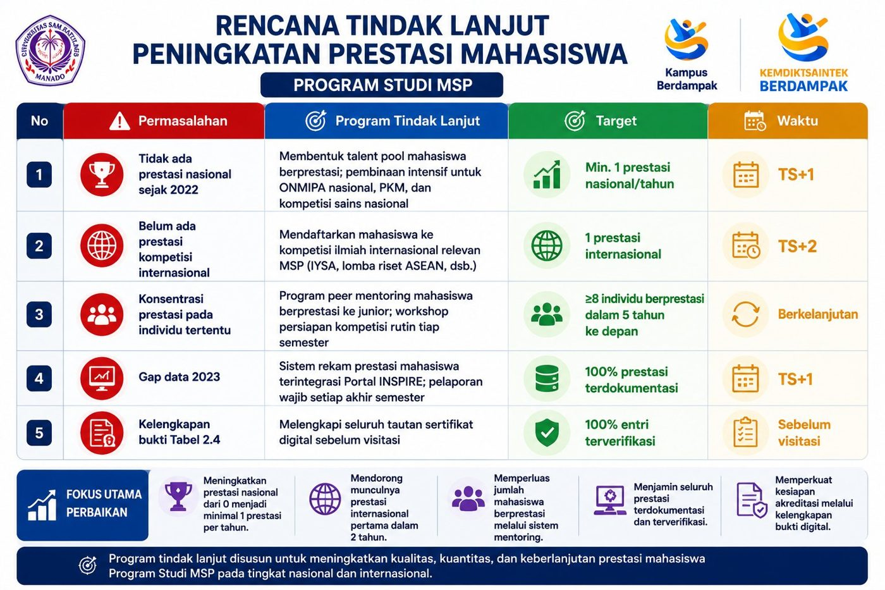
PerbesarPrestasi non-akademik mahasiswa (Tabel 2.5)
| Kegiatan | Tahun | Tingkat | Prestasi |
|---|---|---|---|
| FPIK Go-Talent | 2023 | Lokal | Juara 1 — Christina Lamogia |
| Lomba Baca Puisi FPIK | 2023 | Lokal | Juara 3 — Melisa Djamaludin |
| FPIK Go-Talent (Tarian Daerah) | 2024 | Lokal | Juara 1 |
| FPIK Idol | 2025 | Lokal | Juara 2 — Siti Cago |
| Tarik Tambang Putri Dies Natalis FPIK | 2025 | Lokal | Juara 2 |
| Karang Turi International Choir Competition, Semarang | 2025 | Internasional | 3 medali emas + 2 champion (PSM UNSRAT, incl. Sebastian Karwur) |
Pembinaan prestasi non-akademik
- Ekosistem pembinaan terintegrasi: HIMA MSP (identifikasi bakat), pembina kemahasiswaan PS, fasilitasi WD III untuk akses UKM universitas (termasuk PSM UNSRAT).
- Didukung biaya operasional kemahasiswaan PS (Tabel 3.1) untuk registrasi, transportasi, akomodasi, dan pelatihan persiapan.
- Proyeksi: kompetisi nasional olahraga air & seni budaya bahari; perluasan partisipasi di PSM UNSRAT dan UKM internasional.
Masa studi lulusan (Tabel 2.6)
| Angkatan | Diterima | Lulus s.d. TS | Rata-rata masa studi |
|---|---|---|---|
| TS-7 | 37 | 30 | 5,23 th |
| TS-6 | 32 | 17 | 5,24 th |
| TS-5 | 31 | 21 | 4,71 th |
| TS-4 | 20 | 25 | 4,52 th |
| TS-3 | 23 | 16 | 4,00 th |
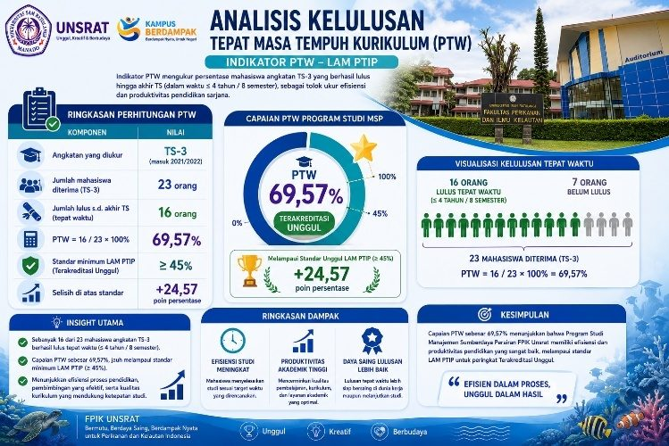
PerbesarAnalisis hubungan masa studi dan IPK
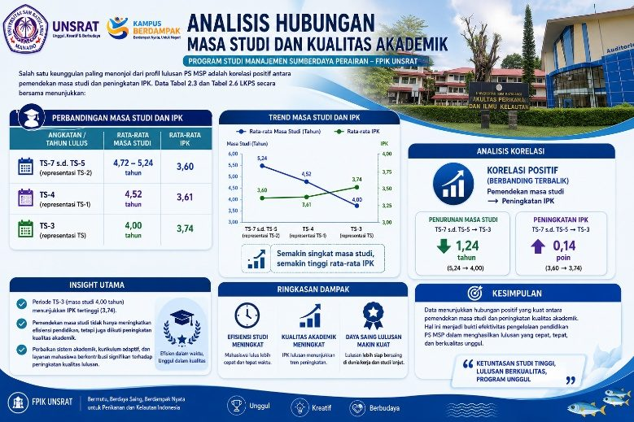
PerbesarPemenuhan indikator kelulusan IAPS 1.0 (PTW & PPS)
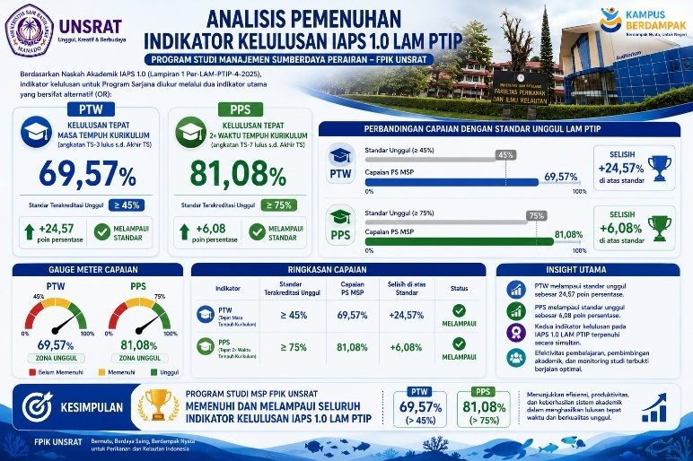
PerbesarKelulusan tepat waktu (PTW) & 2× masa tempuh (PPS)
- PTW 69,57% (16 dari 23 mahasiswa angkatan TS-3, masa studi 4,00 tahun) — PA memantau kemajuan via SIAT; seminar & sidang berkuota bulanan; PKM nasional dapat disetarakan skripsi.
- PPS 81,08% (angkatan TS-7, 30 lulusan, rata-rata 5,23 tahun) — dalam batas maksimal 14 semester.
- Pola kelulusan TS-7 dipengaruhi riset lapangan musiman dan pandemi COVID-19 (2020–2022).
- Mekanisme perbaikan: workshop metodologi semester 5–6, pembatasan bimbingan per dosen, digitalisasi proposal, evaluasi akademik bertahap.
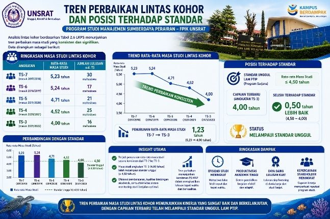
PerbesarTracer study — lima aspek
- 1–2. Terkoordinasi dengan LP3/LPKA UNSRAT dan dilaksanakan reguler melalui portal tracer study PS MSP berbasis web.
- 3. Kuesioner mengacu pertanyaan inti Dikti: tempat kerja, kesesuaian bidang, waktu tunggu, gaji pertama, jabatan, relevansi kompetensi; bagian pengguna menilai 7 aspek.
- 4. Menyasar seluruh lulusan TS-4 s.d. TS-2; strategi multi-kanal (WA group alumni, PIC prodi, bimtek, konfirmasi).
- 5. Disosialisasikan di rapat PS dan situs prodi; digunakan untuk Kurikulum 2024 (penguatan TI, bahasa asing, profil blue economy).
- Kesimpulan LED: kelima aspek terpenuhi → Skor 4.
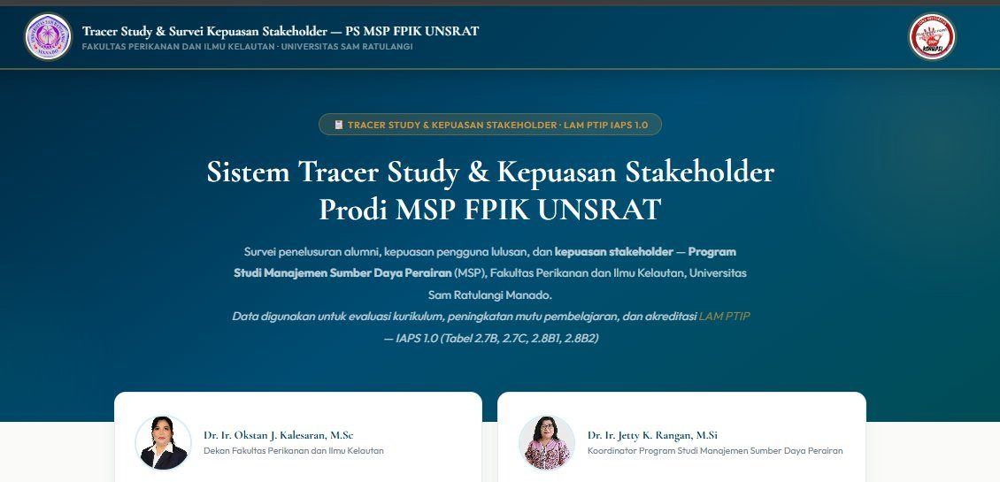
PerbesarSertifikasi kompetensi lulusan (Tabel 2.7A)
- Persentase lulusan bersertifikat: TS-2 21,2% → TS-1 83,3% → TS 72,7% (jauh di atas ambang Skor 4 ≥ 30%).
- Sejak TS-1 sertifikat kompetensi menjadi komponen wajib yudisium.
- Jenis: Lisensi Selam A1 Open Water SSI (mitra Minanga Divers), AMDAL, dan sertifikasi kelautan & perikanan dari magang/MBKM (KKP, BRIN, lembaga konservasi).
- Pelatihan selam 18–21 Juni 2025: 17 mahasiswa lulus; rencana jenjang A2 dan integrasi ke MK Penyelaman Ilmiah.
- Target ≥ 85% lulusan bersertifikat pada TS+1.
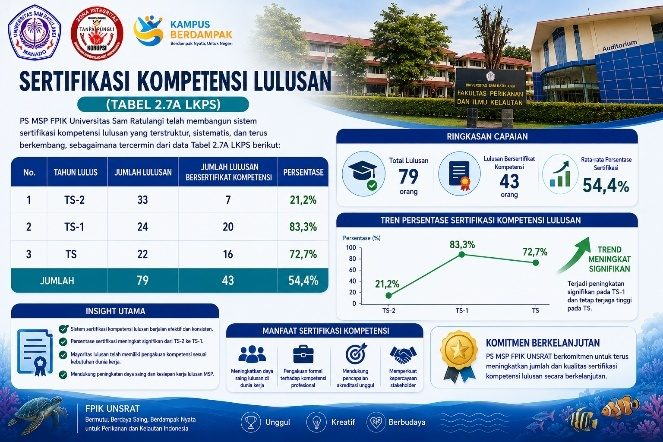
PerbesarKepuasan pengguna lulusan (Tabel 2.7B)
| Aspek kompetensi | Sangat baik | Baik | Cukup | Kurang |
|---|---|---|---|---|
| Kerjasama tim | 100% | 0% | 0% | 0% |
| Etika | 97,06% | 2,94% | 0% | 0% |
| Kemampuan berkomunikasi | 97,06% | 2,94% | 0% | 0% |
| Penggunaan TI | 94,12% | 5,88% | 0% | 0% |
| Pengembangan diri | 94,12% | 5,88% | 0% | 0% |
| Keahlian bidang ilmu | 91,18% | 8,82% | 0% | 0% |
| Bahasa asing | 55,88% | 32,35% | 8,82% | 2,94% |
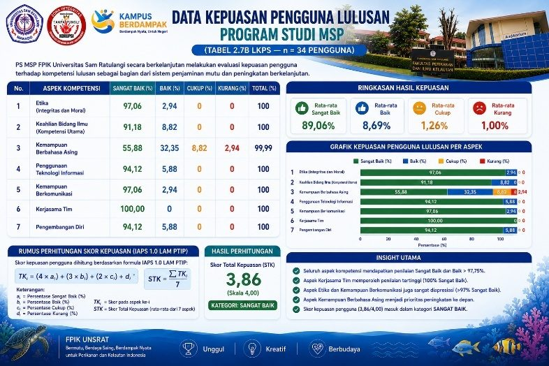
PerbesarMahasiswa baru: persentase penurunan (PPM)
- PPM = (23 − 27) / 23 × 100% = −17,4% → tidak terjadi penurunan (syarat ≤ 10% terpenuhi).
- Lintasan: 23 (TS-4) → 19 (TS-3) → 35 (TS-2) → 40 (TS-1) → 27 (TS).
- Mahasiswa aktif stabil 119–131; rasio dosen : mahasiswa aktif 1 : 7,4.
- Lulus seleksi > pendaftar karena pendaftar hanya mencatat Pilihan 1; kelebihan di atas daya tampung 25 berasal dari Jalur Mandiri Tumou Tou (T2).
- Strategi daya tarik: promosi prestasi & MBKM Kyushu, prospek karier (79,4% bekerja nasional/internasional), jejaring SMA di Sulut, Sulteng, Malut, beasiswa & insentif UKT.
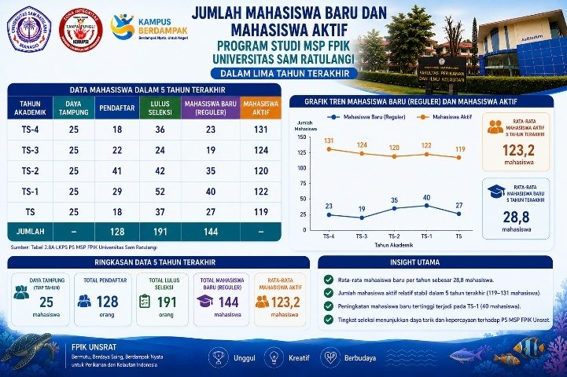
PerbesarDaya saing lulusan: waktu tunggu & tempat kerja
| Tahun lulus | Lulusan | Terlacak | WT < 6 bln | 6–18 bln | > 18 bln | Lokal | Nasional | Multinasional |
|---|---|---|---|---|---|---|---|---|
| TS-4 | 14 | 9 | 6 | 3 | 0 | 2 | 6 | 1 |
| TS-3 | 16 | 10 | 8 | 2 | 0 | 2 | 5 | 3 |
| TS-2 | 33 | 15 | 11 | 4 | 0 | 3 | 10 | 2 |
| Jumlah | 63 | 34 | 25 | 9 | 0 | 7 | 21 | 6 |
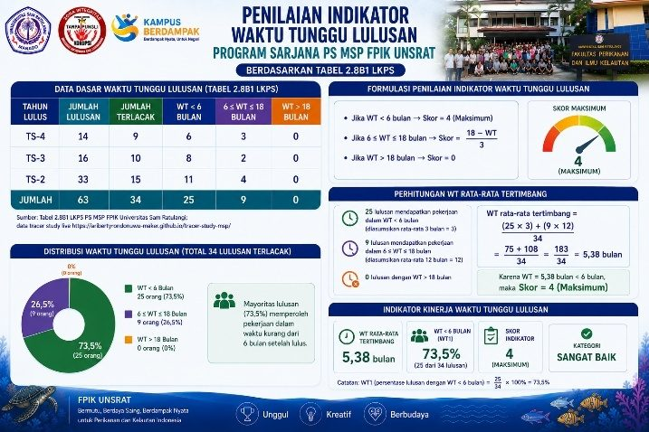
PerbesarRelevansi Penelitian
Peta jalan penelitian, pendanaan, keterlibatan mahasiswa, publikasi, sitasi, luaran, dan dampak kerjasama riset. Data 2023–2025.
LED PS MSP 2026 · hal. 130–151
Peta jalan penelitian FPIK 2023–2027
- Dokumen formal disahkan Dekan (April 2023), selaras Renstra UNSRAT 2020–2024 & 2025–2029 serta Renstra LPPM 2021–2025.
- Enam klaster: (1) SD perairan, konservasi & biodiversitas · (2) akuakultur & kesehatan organisme · (3) penangkapan, oseanografi terapan · (4) pengolahan hasil & keamanan pangan · (5) bioteknologi laut & bioekonomi · (6) sosial ekonomi & tata kelola pesisir.
- Flagship: Likupang Living Laboratory, Pacific Research Network, Kepulauan Tangguh.
- Lima fase: 2023 konsolidasi → 2024 data & metodologi → 2025 hilirisasi & kemitraan → 2026 internasionalisasi → 2027 dampak & keberlanjutan.
- Monev triwulanan (kelompok riset), semesteran (fakultas), tahunan; evaluasi tengah periode akhir 2025/awal 2026.
Peta jalan pengembangan SDM peneliti
- Dokumen: Rencana Pengembangan Dosen dan Tenaga Kependidikan FPIK UNSRAT (UU 12/2012, UU 5/2014 ASN, SN-Dikti, Statuta, SPMI, Renstra).
- Target: penambahan dosen doktor, Lektor Kepala & Guru Besar, tendik bersertifikat — selaras IKU-3 & IKU-4 Renstra UNSRAT 2025–2029.
- Mekanisme: perencanaan tahunan → prioritas rapat pimpinan → pelaksanaan unit → monev (kinerja dosen, capaian program, survei, AMI).
- Peta jalan penelitian memberi arah tematik; rencana SDM menjamin kapasitas pelaksananya.
Pendanaan penelitian (Tabel 3.1 & 3.2)
| Sumber pembiayaan | 2023 | 2024 | 2025 | Jumlah judul |
|---|---|---|---|---|
| Perguruan tinggi / mandiri | 26 | 8 | 12 | 46 (60,5%) |
| Lembaga dalam negeri | 9 | 13 | 5 | 27 (35,5%) |
| Lembaga luar negeri | 1 | 1 | 1 | 3 (3,9%) |
| Jumlah | 36 | 22 | 18 | 76 |
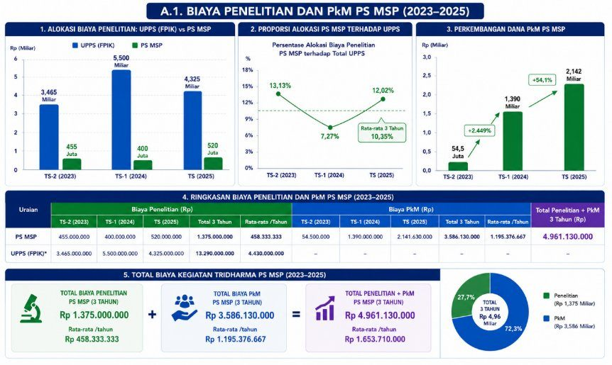
PerbesarKekuatan & area pengembangan pendanaan riset
- Kekuatan: diversifikasi tiga sumber dana; mitra internasional tiga tahun berturut-turut; nilai per judul internasional ± 24,5× hibah internal; tema berbasis perikanan Sulut & co-management.
- Area pengembangan: fluktuasi judul internal (26 → 8 → 12); hanya 1 judul internasional per tahun; ketergantungan siklus hibah nasional (9 → 13 → 5).
- Arah: menambah judul internasional, membentuk research group terstruktur, meningkatkan keterlibatan mahasiswa S1.
Keterlibatan mahasiswa dalam penelitian (Tabel 3.3)
- 29 judul penelitian DTPS melibatkan mahasiswa (11 · 8 · 10), menjangkau 13 dari 16 DTPS.
- PPDM = 29 / 76 = 38,2% > ambang 25% → Skor 4.
- Tema: ekologi & biodiversitas pesisir (lamun Tongkaina & Sarawet), stok perikanan (TropFishR kerapu Sangihe), rehabilitasi terumbu (transplantasi & terumbu buatan Teluk Manado), bioprospeksi makroalga, pencemaran & bioindikator (mikroplastik, moluska).
- Rekognisi SKS: jalur Skripsi 6 SKS (Pasal 21) dan kesetaraan PKM nasional (Pasal 63 ayat 8); publikasi jurnal nasional wajib untuk kelulusan (Pasal 67).
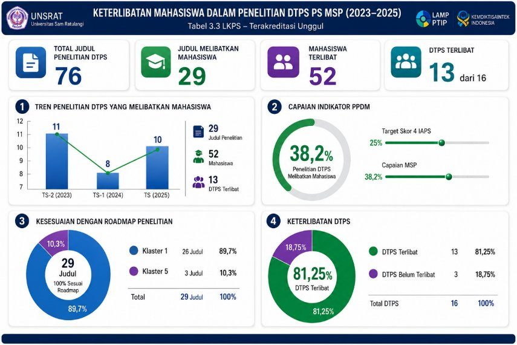
PerbesarBudaya penelitian UPPS
- Seluruh 29 judul sesuai roadmap: 26 (89,7%) Klaster 1 dan 3 (10,3%) Klaster 5.
- Pengembangan kapasitas via LPPM: pelatihan proposal kompetitif, pembinaan klaster, fasilitasi hibah DRTPM & internasional.
- Marine Field Station Likupang sebagai infrastruktur riset in situ (terumbu Bunaken, lamun Likupang, mangrove Wori).
- Rapat tinjauan penelitian minimal sekali per semester (siklus pengendalian PPEPP).
- Umpan balik riset → pembelajaran melalui integrasi ke mata kuliah.
Publikasi ilmiah DTPS (Tabel 3.4A)
| Jenis publikasi | 2023 | 2024 | 2025 | Jumlah |
|---|---|---|---|---|
| Jurnal nasional terakreditasi | 81 | 62 | 28 | 171 |
| Jurnal internasional bereputasi | 21 | 18 | 30 | 69 |
| Seminar wilayah/lokal | 9 | 4 | 3 | 16 |
| Seminar nasional | 10 | 11 | 1 | 22 |
| Seminar internasional | 14 | 6 | 1 | 21 |
| Jumlah | 135 | 101 | 63 | 299 |
Publikasi mahasiswa & artikel tersitasi
- Mahasiswa (Tabel 3.4B): 30 publikasi di jurnal nasional terakreditasi (18 · 10 · 2); RN = 30/119 = 25,21% → Skor 3; kategori pagelaran/presentasi belum terisi.
- Didorong Pasal 67 Peraturan Akademik (publikasi wajib untuk lulus); arah: pendampingan publikasi internasional mahasiswa.
- Sitasi (Tabel 3.4C): 124 artikel DTPS tersitasi dengan total 259 sitasi (99 · 87 · 73) dari 15 DTPS.
- Kontributor terbesar: Kepel (23 artikel), Mantiri (12), Kondoy (10); 39 artikel (31,5%) di jurnal internasional terindeks.
- RS = 124 / 16 = 7,75 > 0,5 → Skor 4.
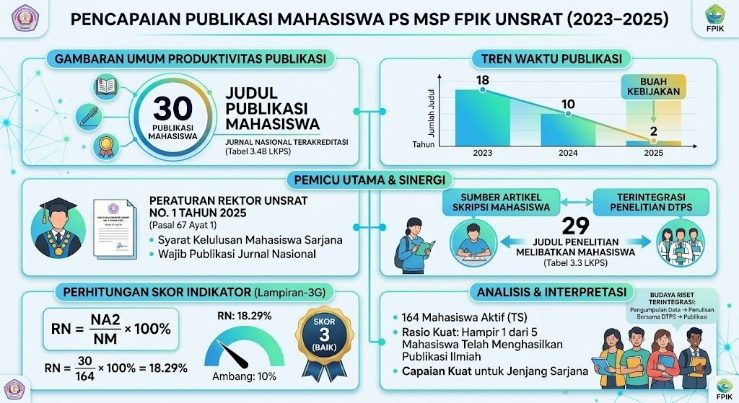
PerbesarAnalisis dampak riset — volume sitasi DTPS
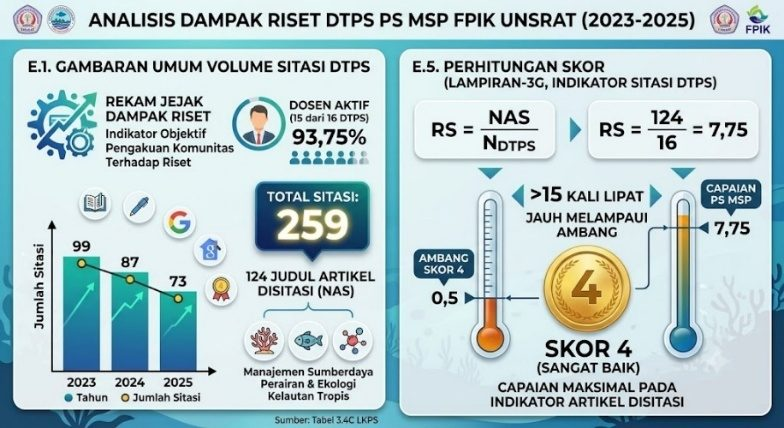
PerbesarDampak kerjasama riset — tiga aspek
- Ekosistem kerjasama penelitian lokal–nasional–internasional (Tabel 5.4B) dengan mitra dari 15 negara.
- Aspek 1 — luaran: publikasi internasional naik bersama kolaborasi Kyushu, Tokyo, Kyoto-CSEAS, Kagoshima, CAS, Bologna, Marche, Plymouth, Westminster; mahasiswa menjadi enumerator Rare di 99 desa pesisir.
- Aspek 2 — kinerja & fasilitas: genomik udang Genics, akses fasilitas KKP Tatelu, transfer teknologi Guangxi Academy of Sciences (2024–2029), sertifikasi SCUBA; metodologi survei sosio-ekonomi, EAFM, co-management.
- Aspek 3 — kepuasan & keberlanjutan: kontrak 3–5 tahun, mitra baru (Genics, IDEA Consultants, Nanning Normal Univ., FAO-UKIP), MoU/MoA formal, UPT Layanan Internasional, target kerjasama luar negeri 3 → 8 per tahun, forum business/government matching tahunan.
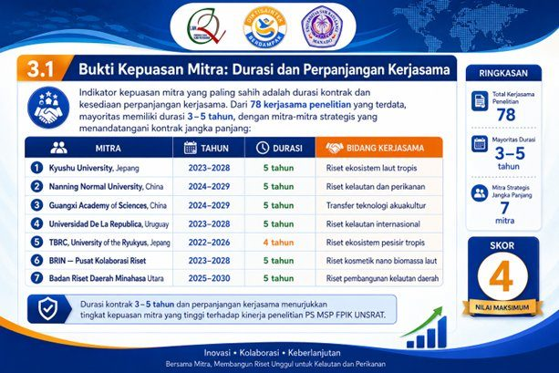
PerbesarLuaran penelitian lain & inovasi diadopsi
- Tabel 3.5A–D LKPS final: paten/paten sederhana 3, hak cipta 10, TTG/produk/rekayasa sosial 17, buku ber-ISBN & book chapter 45.
- Contoh: paten sederhana GPS penyelam dari botol plastik (BRPS 778/XII/2022), metode kelimpahan Telescopium, pakan kepiting bakau dari ekstrak pakis sayur, alat penyangga HP foto makro.
- Tabel 3.5E LKPS final mencatat 36 inovasi DTPS diadopsi masyarakat/industri (RS = 36/16 = 2,25).
- Klaster inovasi: biomonitoring pesisir, konservasi terumbu (reef ball Ratatotok sejak 1999–2000), akuakultur bahan lokal, alat bantu riset.
- Luaran mahasiswa: keterlibatan pada TTG/produk dan 1 buku ber-ISBN; rencana pendampingan HKI & co-authorship buku ajar.
Data kuantitatif dan perhitungan NLP
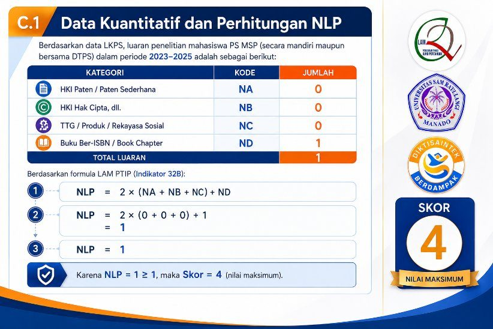
PerbesarHilirisasi inovasi: langkah akselerasi
- Inovasi berpotensi yang perlu didokumentasikan formal: wadah vertikultur Caulerpa, model spasial hasil tangkapan ikan layang, sistem pemisahan mikroplastik sedimen mangrove.
- (1) Tim technology transfer FPIK penghubung inovasi DTPS dengan industri & Pemda.
- (2) Target hilirisasi masuk kinerja DTPS melalui evaluasi BKD.
- (3) Kanal adopsi melalui 12 mitra DUDI (PT Autore Pearl, PT Karua Hanesa Jaya, Nitto Seimo, dll.).
- Posisi: produktivitas luaran kuat; transisi dari riset murni ke riset terapan sesuai Roadmap 2023–2027 & forum business–government matching.
Relevansi Pengabdian kepada Masyarakat
Peta jalan PkM, pendanaan, keterlibatan mahasiswa, pembinaan desa/kelompok, dan dampaknya. Data 2023–2025.
LED PS MSP 2026 · hal. 151–178
Peta jalan PkM & enam klaster payung
| Klaster unggulan | Relevansi PkM PS MSP |
|---|---|
| 1 SD perairan, konservasi, biodiversitas | Konservasi pesisir, rehabilitasi habitat, EAFM, karbon biru — payung inti |
| 2 Akuakultur & kesehatan organisme | Pemberdayaan pembudidaya, budidaya rumput laut & makroalga |
| 3 Penangkapan, oseanografi terapan | Pelatihan logbook penangkapan, pendampingan nelayan berbasis data |
| 4 Pengolahan hasil & keamanan pangan | Olahan pesisir (cakalang fufu, dsb.) |
| 5 Bioteknologi laut & bioekonomi | Pigmen alga, kopi mangrove, pewarna alga |
| 6 Sosial ekonomi & tata kelola pesisir | Model pemberdayaan nelayan, policy brief, co-management |
Roadmap pengembangan kepakaran
- Dokumen: Rencana Pengembangan Dosen & Tendik FPIK — selaras misi FPIK untuk Indonesia Timur & Pasifik.
- Akademik: S3, Serdos, pedagogik, digital learning (81,25% DTPS doktor).
- Penelitian: 6–8 kelompok riset aktif, klinik publikasi & KI, forum riset bulanan.
- PkM: pelatihan proposal, hilirisasi riset untuk pesisir, integrasi MBKM — terbukti dengan dana EDF dan FAO.
- Karier & kepemimpinan: jabatan fungsional, kaderisasi pimpinan.
- Kepakaran DTPS berkorespondensi langsung dengan tema PkM; monev via BKD, survei, AMI.
Pendanaan PkM (Tabel 3.1 & 4.1)
| Sumber pembiayaan PkM | 2023 | 2024 | 2025 | Jumlah judul |
|---|---|---|---|---|
| Perguruan tinggi / mandiri | 0 | 2 | 4 | 6 |
| Lembaga dalam negeri (Pemda APBD, PT TJ Silfanus) | 6 | 5 | 3 | 14 |
| Lembaga luar negeri (EDF, FAO-UKIP Sorong) | 1 | 1 | 1 | 3 |
| Jumlah | 7 | 8 | 8 | 23 |
Implementasi peta jalan PkM per fase
- Konsolidasi 2023 — target 3 site; realisasi 7 kegiatan di 6 lokasi (Sulut & Raja Ampat), dominan PT TJ Silfanus & EDF; seluruh 6 klaster aktif.
- Penguatan 2024 — target 4 site; 5 lokasi, PkM internal mulai berjalan.
- Akselerasi hilirisasi 2025 — target 5 site & kontrak; 8 kegiatan di 6+ lokasi, kontrak FAO-UKIP Sorong, PkM internal 4 kegiatan.
- 100% kegiatan sesuai roadmap (Tabel 4.2).
- 98% dana PkM berasal dari luar DIPA — bukti reputasi lintas sektor (Pemda, swasta, internasional).
Keterlibatan mahasiswa dalam PkM (Tabel 4.2)
- Tabel 4.2 LKPS: 8 entri (1 entri belum lengkap); LED menghitung 7 PkM melibatkan mahasiswa dari 23 → PPkMDM = 30,4% (≥ 25% → Skor 4); 100% sesuai roadmap.
- Contoh: pemberdayaan kelompok pesisir Desa Arakan (Wantasen, 2025; 3 mahasiswa) · pelatihan logbook nelayan Kampung Ambon (Mandagi & Kondoy, 2025; 3 mahasiswa) · makroalga Turbinaria ornata, karagenan, pewarna alga (Kepel).
- Dimensi: pendidikan (judul kegiatan mahasiswa spesifik), riset terapan (research-to-community transfer), cakupan wilayah (Minahasa Selatan, Utara, Tenggara).
- Integrasi tridharma: topik dari roadmap riset → skripsi → materi Bioteknologi Kelautan & Pengelolaan SD Pesisir.
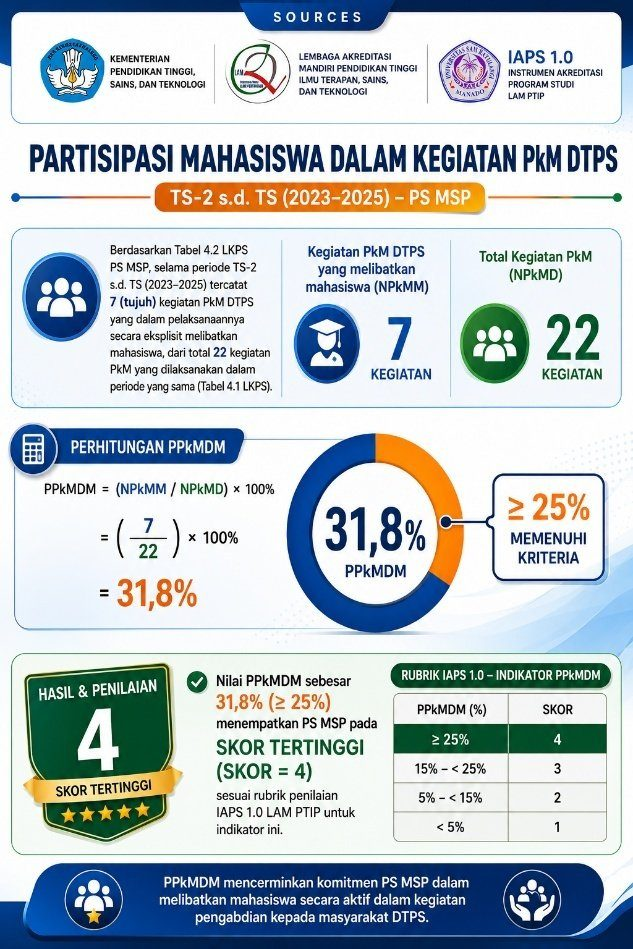
PerbesarRekognisi SKS & budaya PkM
- Landasan: Peraturan Akademik Pasal 91 ayat (2)–(3) dan Panduan Kurikulum UNSRAT 2024.
- Jalur 1 — Skripsi (6 SKS): PkM Desa Arakan & logbook Kampung Ambon dengan lembar pengesahan TA dan publikasi Jurnal Platax.
- Jalur 2 — MBKM: konversi ke KKNT, Pengelolaan SD Pesisir, Rehabilitasi Ekosistem Laut, Bioteknologi Kelautan (3 SKS), Ekowisata Bahari (2 SKS).
- Budaya PkM: peta jalan dengan matriks tema–prodi–lab; PS MSP prodi inti pada Klaster 1, 3, 6; AMI XI & XII; SOP/FPIK/PS/15; rekognisi di SISTER; evaluasi tahunan.
- Rencana: formalisasi judul kegiatan mahasiswa, ekspansi ke Sitaro–Sangihe–Talaud, kelengkapan Tabel 4.2, integrasi SIAT.
Pembinaan desa & kelompok masyarakat (Tabel 4.3)
- 29 mitra binaan; RDB = 29/16 = 1,81 ≥ 0,1 → Skor 4.
- Pemberdayaan langsung: PKM kelompok nelayan Kampung Ambon & kelompok pesisir Arakan; olahan alga Halimeda & karagenan; Turbinaria Kema II; logbook nelayan; co-management teri Misool Selatan (FAO); restorasi & monitoring terumbu Pantai Malalayang bersama PT TJ Silfanus.
- Mitra kebijakan: tenaga ahli RPJPD, RPJMD, KLHS, RIPK, Raperda di pemerintah daerah se-Sulawesi Utara (dikukuhkan SK).
- Komposisi 29 mitra (Tabel 4.3): 15 entri pemda · 8 desa/komunitas pesisir · 2 lembaga internasional (EDF, FAO–UKIP) · swasta & Rare.
- Rencana: Desa Arakan & Kampung Ambon sebagai laboratorium lapang PkM permanen.
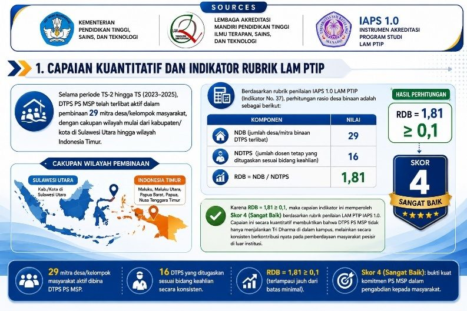
PerbesarPerkembangan desa & kelompok binaan
| Aspek | Perkembangan mitra binaan |
|---|---|
| Ekonomi | Kampung Ambon: manajemen usaha tangkap, penanganan higienis, akses pasar · Arakan/Buku Utara/Kema II: karagenan, Turbinaria, minuman fungsional Halimeda · Misool Selatan: co-management teri (FAO-UKIP) |
| Lingkungan | Restorasi & monitoring terumbu karang Pantai Malalayang bersama PT TJ Silfanus (substrat buatan, transplantasi, monitoring) · logbook nelayan sebagai data baseline · program Indonesia Fisheries bersama EDF |
| Sosial & pendidikan | Kemampuan mengisi logbook & kohesi kelompok · pergeseran paradigma pemanfaatan alga · transfer pengetahuan dua arah dengan mahasiswa |
| Kelembagaan & tata kelola | Dokumen RPJPD, RPJMD, KLHS, RIPK, Raperda di pemda Sulawesi Utara; 15 entri pemda dalam Tabel 4.3 |
| Tren | Mitra aktif 3 (2023) → 7 (2024) → 19 (2025); total 29 mitra binaan |
Kerjasama PkM — tiga aspek dampak
- 95 kerjasama PkM (Tabel 5.4C: 14 internasional, 50 nasional, 33 lokal) dengan pemda, BRIN, organisasi internasional, industri, lembaga konservasi, dan PT mitra.
- Aspek 1 — luaran: data restorasi karang Malalayang → publikasi & skripsi; data bioteknologi alga; EDF, FAO, Rare (99 desa) memperkuat rekam jejak global.
- Aspek 2 — tridharma & fasilitas: mahasiswa di setiap PkM internal TS; BRIN Pusat Kolaborasi Riset Ekosistem Laut (2023–2028), excavator dari Dinas Pertanian, Kelautan & Perikanan Manado, akses TN Bunaken, KKP Bitung, DKP Minut.
- Aspek 3 — kepuasan & keberlanjutan: mitra tumbuh, penunjukan berulang oleh pemda, kontrak 3–5 tahun (BRIN, Brida & DKP Minut 2025–2030, Unpatti, PT Coral Eye), mitra DUDI baru (Autore Pearl, Karua Hanesa Jaya, Nitto Seimo, Coral Eye).
Produk/jasa PkM diadopsi & luaran PkM
- Tabel 3.5F: 4 produk/jasa diadopsi — Turbinaria ornata (Kema II), media terumbu buatan/reef ball, karagenan Kappaphycus (Buku Utara), pewarna merah Halymenia (Wanita Kaum Ibu GMIM Kema I); RPA = 0,25 → skor 2,50.
- Luaran PkM DTPS: paten (pelampung batok kelapa, kopi mangrove, pigmen Kappaphycus, metode keberlanjutan mata pencaharian), hak cipta, dan buku ber-ISBN (reef ball, KJA ramah lingkungan Danau Tondano, ekowisata mangrove Mantehage, cakalang fufu Bitung) → RLP 1,625, skor 4.
- Luaran PkM mahasiswa: 2 rekayasa sosial/TTG pada Tabel 3.5C (Desa Arakan & logbook Kampung Ambon, 2025); HKI/buku mahasiswa belum ada.
- Prioritas: inventarisasi & formalisasi produk/jasa (target RPA ≥ 0,5), SOP rekognisi PkM MBKM, pendampingan luaran mahasiswa, KKN-Tematik untuk TTG.
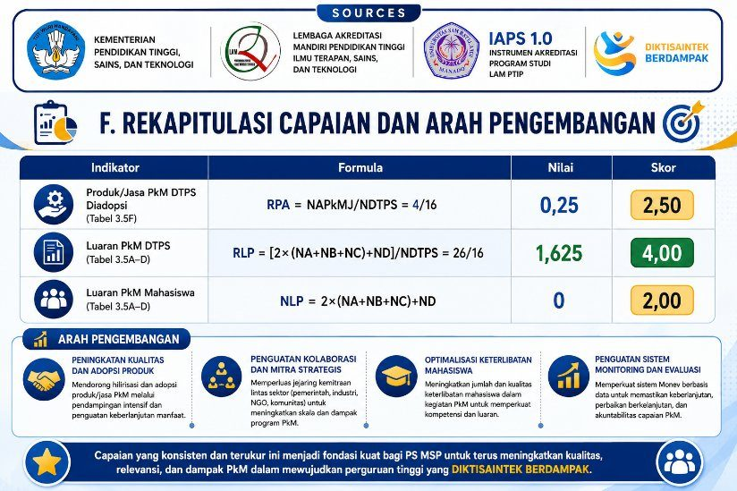
PerbesarAkuntabilitas
Kebijakan dan struktur organisasi, kepemimpinan, zona integritas, SIM, layanan mahasiswa, SDM, kecukupan dana, rekognisi, dan kerjasama.
LED PS MSP 2026 · hal. 179–237
Kebijakan, roadmap, dan pedoman pengelolaan
- Kebijakan: Statuta UNSRAT (Permendiktisaintek 049/2025), OTK (Permendiktisaintek 5/2025), Peraturan Akademik (Pertor 1/2025), Kebijakan SMOP FPIK.
- Roadmap: Renstra FPIK 2023–2026 (4 pilar), Peta Jalan Penelitian 2023–2027, Rencana Pembangunan ZI menuju WBK 2025–2026 (SK Rektor 1955/UN12/LL/2025).
- 20 dokumen pedoman (terbit 01.11.2025): isu internal–eksternal, kebutuhan pihak terkait, bisnis proses layanan, risiko & peluang, sasaran & rencana mutu, persuratan, SOP PMB, kurikulum, P2M, audit, pengaduan, keluhan, SDM, penghargaan, pembinaan tendik, beasiswa, ormawa, disabilitas, tanggung jawab sosial.
Struktur organisasi & keefektifannya
- Struktur ditetapkan dalam Lamp. 4-M-SMOP mengacu OTK UNSRAT.
- Pimpinan: Dekan; WD Akademik & Kerjasama; WD Umum & Keuangan; WD Kemahasiswaan & Alumni; Senat Fakultas.
- Administratif: Bagian Umum (Sub Bag. Akademik; Umum & BMN; Keuangan & Kepegawaian; Kemahasiswaan & Alumni).
- Akademik: Jurusan MSP (PS MSP, BDP, IK, ABP) dan Jurusan PHP (THP, PSP); Koordinator PS MSP Dr. Ir. Jety K. Rangan, M.Si.; laboratorium & kelompok fungsional.
- Efektif: garis wewenang jelas, mengelola 6 PS (± 951 mahasiswa), koordinasi tridharma, inovasi SIFIKA, e-absensi, dashboard layanan publik.
Komitmen & kapabilitas pimpinan UPPS — 6 fungsi
| Fungsi | Bukti |
|---|---|
| 1 Perencanaan | Renstra FPIK 2023–2026, Rencana Mutu (SMART), Rencana Pembangunan ZI, Roadmap Penelitian, Rencana Pengembangan Dosen & Tendik |
| 2 Pengorganisasian | Tim ZI (21 anggota, 6 area), Tim SPIP, Satgas Pengaduan, Tim WBS (SK 1957/UN12.5/LL/2025), Agen & Role Model Reformasi |
| 3 Penempatan personel | Dosen sesuai kepakaran (BKD); tendik sesuai bidang keterampilan; SISTER; SOP SDM & dosen luar biasa |
| 4 Pelaksanaan | Tridharma terukur; IPAK 3,89 & IPKP 3,80 (kepuasan 96%); SIFIKA, PPKT respons ≤ 24 jam, Pojok ZI |
| 5 Pengendalian | AMI XI & XII dengan PTK; SPIP risk register; WBS; dashboard SPBE (FPIK entitas No. 43 dari 51 layanan daring) |
| 6 Pelaporan | Laporan Kinerja Jul–Des 2025; laporan AMI; survei ZI; Portal Inspirasi Dikti; SAKIP UNSRAT A (84,6) 2024 |
Kebijakan zona integritas
- Dasar: Perpres 81/2010; PermenPANRB 90/2021 jo. 5/2024; SK Rektor 1955/UN12/LL/2025; Statuta Pasal 20 (kode etik).
- Ketaqwaan, etika, moral: Kode Etik Dosen (Senat), Kode Etik Tendik, Tata Tertib Mahasiswa; MK Agama, Pancasila, Kewarganegaraan.
- Anti gratifikasi & korupsi: WBS anonim, Satgas Pengaduan, Tim SPIP, pakta integritas pimpinan pada Dies FPIK ke-60 (Nov 2025).
- Hasil survei ZI 2025 (48 responden): IPAK 3,89, IPKP 3,80, nilai keseluruhan 3,84, kepuasan 96%, "tidak ada diskriminasi" 3,96.
- Target predikat WBK 2026 — "Melayani dengan Integritas, Membangun dengan Transparansi, Bertumbuh dengan Akuntabilitas".
Sistem informasi manajemen berbasis web
- Portal INSPIRE UNSRAT (inspire.unsrat.ac.id) — beroperasi sejak 2020, ditetapkan Pertor 1/2025 Pasal 23; > 70 fitur.
- Modul: akademik (RPS, jadwal, monitoring kuliah, nilai, MBKM) · kemahasiswaan (KRS, bimbingan, skripsi, konseling, beasiswa) · penelitian & PkM (proposal, logbook, luaran, SINTA/Scholar, HKI) · kepegawaian (e-SDM, BKD, SKP, remunerasi) · penjaminan mutu (modul Auditor SPMI/AMI).
- Kepuasan pengguna 2024: 4,24 / 5,00 (366 responden; 79,65% puas–sangat puas).
- Dashboard UNSRAT (dashboard.unsrat.ac.id) — data terbuka akademik, SDM, beasiswa, akreditasi, keuangan.
- Terintegrasi dengan SIAT, SISTER, PDDikti, SIMPOK, SIFIKA, dan 51 layanan daring SPBE.
Good governance — lima pilar tata pamong
| Pilar | Bukti keterlaksanaan |
|---|---|
| Kredibel | Statuta & status BLU (KMK 167/KMK.05/2017); struktur & Senat; pakta integritas; Tim ZI 21 anggota; SK Agen & Role Model RB; AMI XII: SPMI konsisten |
| Transparan | SIAT, fpik.unsrat.ac.id, msp.unsrat.ac.id; Portal Inspirasi Dikti; maklumat & standar pelayanan; SIMPOK; "ketersediaan informasi pelayanan" 3,94 |
| Akuntabel | RKT/Renop & perjanjian kinerja; IKU SMOP; AMI XI (Des 2023) & XII (Jun 2025) dengan PTK; LAKIP FPIK 2024; target SAKIP BB ≥ 80 |
| Bertanggung jawab | Kepatuhan regulasi akademik, SDM, kemahasiswaan; tindak lanjut temuan AMI & ZI; Panduan Tanggung Jawab Sosial (Lamp. 7) |
| Adil | "Tidak ada diskriminasi" 3,96 (98% responden); SDM berbasis merit; SOP disabilitas & beasiswa afirmatif; WBS, Satgas, PPKT ≤ 24 jam |
Sistem seleksi mahasiswa
- Landasan: Statuta Pasal 12 (non-diskriminasi & kuota afirmatif), Peraturan Akademik Pasal 37, SOP/FPIK/PS/01, Rencana Mutu.
- Transparan & akuntabel: SNBP, SNBT, Mandiri; alur publikasi → daftar daring → verifikasi → seleksi → pengumuman → registrasi → orientasi; SK Rektor mahasiswa baru.
- Afirmatif: KIP-Kuliah, daerah 3T kepulauan (Sulut, Malut, Papua), penyandang disabilitas (SOP Layanan Disabilitas, pengaduan ≤ 3 hari kerja).
- Inklusif: kode NIM untuk reguler, pindahan, kerja sama, asing, daring, paruh waktu.
- Tabel 2.8A: pendaftar 128 (calon Pilihan 1), lulus seleksi 191 (Pilihan 1–3 + pelimpahan kuota), mahasiswa baru 144 (registrasi ulang).
- Mahasiswa baru TS-2 s.d. TS (35, 40, 27) di atas daya tampung 25 melalui Jalur Mandiri Tumou Tou (T2) Unsrat; kajian daya tampung 40–50 & perluasan beasiswa Pemda/industri.
Layanan kemahasiswaan
| Layanan | Implementasi |
|---|---|
| Administrasi akademik | INSPIRE: KRS/KHS, cuti, absensi, UKT, surat aktif & legalisir (1–2 hari), keringanan UKT |
| Penalaran, minat, bakat | PKM, LKTI; HIMA MSP, Mapala "Zooxanthela", UPKK & Badan Tazkir; SOP ORMAWA (izin ≤ 5 hari) |
| Bimbingan & konseling | Pertor 1/2025 Pasal 48; Dosen PA & Kartu Monitoring Perkuliahan |
| Beasiswa | Prestasi, ekonomi (KIP-K), eksternal; via INSPIRE, 2–4 minggu |
| Kesehatan | Poliklinik & RSGM UNSRAT; cuti sakit tidak dihitung masa studi |
| Karier & kewirausahaan | PKL/Magang SOP No. 24 (1–3 bulan); komitmen kewirausahaan dalam Kebijakan SMOP |
| Kepemimpinan | HIMA & UKM; Juara I Putra & II Putri Pemilihan Putra-Putri FPIK 2023 |
| Disabilitas & MBKM | SOP Layanan Disabilitas; SOP MBKM No. 34 dengan konversi SKS |
Rencana pengembangan DTPS — empat aspek
- Terintegrasi dengan Renstra UNSRAT 2025–2029 (IKK-4.3 s.d. 4.6), Rencana Pengembangan Dosen & Tendik, SOP Manajemen SDM (prosedur 6.4), dan Program Kerja Tahunan Dekan.
- Kualifikasi & kecukupan: 16 DTPS (3 GB, 7 LK, 6 Lektor — Tabel 2.1A); rekrutmen doktor baru untuk regenerasi.
- Jenjang pendidikan: 13/16 doktor (81,25%); fasilitasi S3 bagi 3 dosen magister (beasiswa internal & LPDP), target seluruh DTPS doktor sebelum 2029.
- Pendidikan profesi: Serdos, pelatihan pedagogik & OBE, kepemimpinan akademik, pemakalah forum ilmiah (IKK-4.4).
- Sertifikasi kompetensi: AMDAL A, EAFM, Asesor BKD, penilai ikan karang; percepatan Lektor → Lektor Kepala (Rondonuwu, Lasabuda, Mantiri) dengan mentoring guru besar.
Rencana pengembangan tenaga kependidikan
- Bersumber dari Renstra UNSRAT 2025–2029 ("peningkatan kompetensi tendik bersertifikasi") dan Renstra 2020–2024.
- Kualifikasi & kecukupan: tendik lintas fungsi (akademik, kepegawaian, keuangan, BMN, pustakawan, PLP, arsiparis) dengan uraian tugas resmi; analisis kebutuhan tahunan; formasi CPNS.
- Jenjang pendidikan: izin belajar bagi tendik D3/SLTA melalui Bagian Kepegawaian.
- Pendidikan profesi: Arsiparis Ahli Muda (IV/a), PLP Ahli Muda, pustakawan; empat klaster: teknis, layanan, manajerial, karier.
- Sertifikasi: diklat BKN & Pusdiklat, digitalisasi layanan, laboran bersertifikat ISO/IEC 17025; investasi SDM UPPS Rp 220 jt → 267 jt.
Realisasi investasi SDM, sarana, prasarana (Tabel 3.1)
| Investasi (juta Rp) | UPPS 2023 | UPPS 2024 | UPPS 2025 | PS rata-rata |
|---|---|---|---|---|
| SDM | 220,0 | 235,0 | 267,0 | 14,2 |
| Sarana | 264,0 | 127,9 | 295,0 | 38,2 |
| Prasarana | 1.484,0 | 800,0 | 200,0 | 138,0 |
Kecukupan dana & sarana untuk capaian pembelajaran
- Pendidikan: biaya dosen ± Rp 1,45 M/tahun, operasional pembelajaran & kemahasiswaan memadai; rasio dosen : mahasiswa 1 : 7,4.
- Penelitian: 76 judul 2023–2025; dana UPPS rata-rata Rp 4,43 M/tahun.
- PkM: Rp 54,5 jt (2023) → Rp 2,14 M (2025) dari PT TJ Silfanus, Pemda, FAO, EDF.
- Sarana untuk CPL: ekologi (Bioekologi, Biologi Kelautan, MFS Likupang), pesisir (Pesisir & PPK, Geomorfologi Pantai), molekuler (Biomolekuler, UPT Lab.), toksikologi (Horiba U-50, AAS); LP3K terakreditasi KAN.
- Proyeksi 2026–2028: hibah DRTPM/BRIN/KKP, riset internasional (Palau, Filipina, Pasifik), pendapatan BLU UPT Lab., PkM bersama BBKSDA & BTNB; pembaruan alat kualitas air & survei bawah laut dalam RKA 2026.
Kualifikasi, kompetensi & kecukupan laboran
- 1 PLP ASN — Mayse Sofien Siby, S.Pi (PLP Pertama); latar S1 Perikanan relevan dengan analisis ekologi perairan.
- 5 dokumen kompetensi (Tabel 2.1E): SK Laboran, Workshop ISO/IEC 17025:2017, kalibrasi timbangan & alat ukur, analisis kimia, media mikrobiologi.
- Rasio 1 PLP : 14 laboratorium aktif diakui perlu ditingkatkan; dikompensasi empat mekanisme: (1) asisten lab mahasiswa (nilai min. B+), (2) 14 lab dipimpin dosen doktor, (3) UPT Lab. Terpadu (HPLC, UV-VIS, XRF, FTIR), (4) LP3K terakreditasi KAN.
- Rencana: 2025–2026 formasi ≥ 2 PLP baru (CASN/PPPK) + pelatihan K3 & GLP; 2026–2028 SOP Asisten Laboratorium & laboran PPPK; 2028–2029 PLP studi S2.
Jabatan akademik DTPS — PDGBLKL
- PDGBLKL = (NDGB + NDLK + NDL) / NDTPS × 100% = (3 + 7 + 6) / 16 = 100%.
- 3 Guru Besar (18,75%), 7 Lektor Kepala (43,75%), 6 Lektor (37,50%); tidak ada Asisten Ahli.
- Melampaui ambang 75% → Skor 4,00 (maksimal); seluruh DTPS berjabatan minimal Lektor.
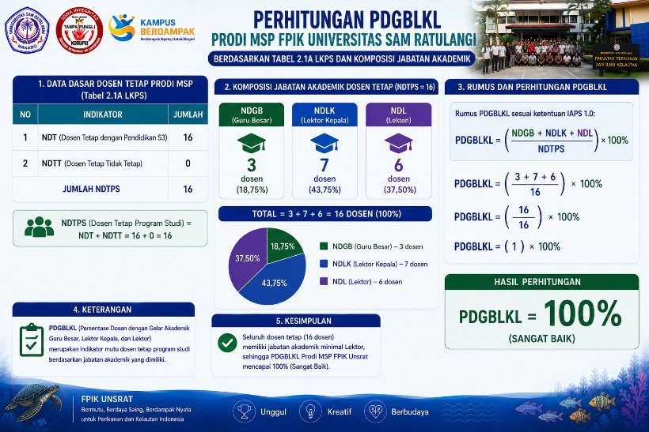
PerbesarRekapitulasi komposisi jabatan akademik DTPS 2025
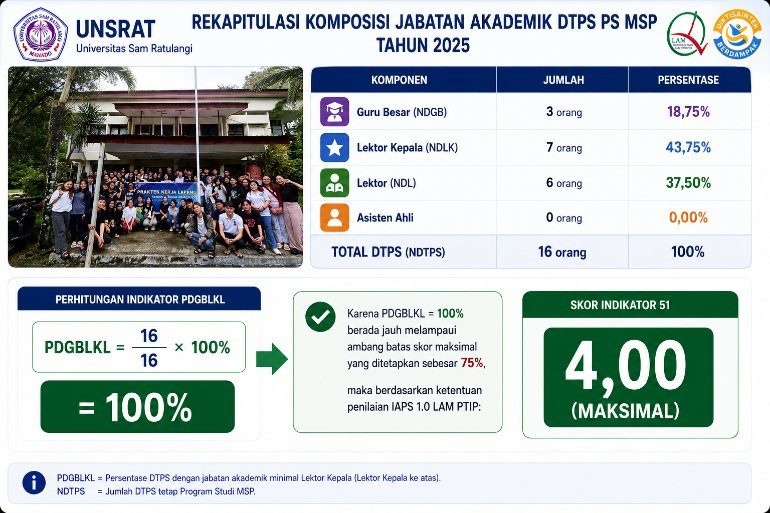
PerbesarDTPS berpendidikan doktor — PDS3
- NDS3 = 13 dari NDTPS = 16 → PDS3 = 81,25%, melampaui ambang 50% → Skor 4.
- Tiga DTPS masih bergelar magister (termasuk Ir. A. D. Kambey, Lektor Kepala); difasilitasi studi S3 melalui beasiswa internal & LPDP.
- Target seluruh DTPS bergelar doktor sebelum 2029 (Rencana Pengembangan Dosen & Tendik).
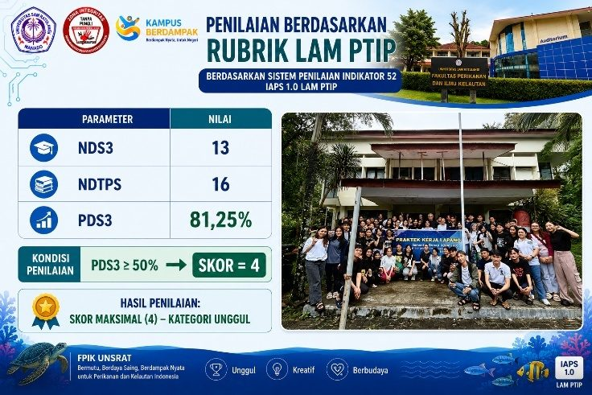
PerbesarKeanggotaan asosiasi keilmuan — PDA
- NDA = 9 dari 16 DTPS → PDA = 56,25%, melampaui ambang 50% → Skor 4,00.
- Asosiasi: ISOI (SK 15/SK/ISOI/IX/2023), ISPIKANI (SK 021/KPTS/DPP/ISPIKANI/XII/2024), ISKINDO; Prof. Kepel juga anggota PII.
- 7 DTPS (43,75%) belum terdokumentasi sebagai anggota — peluang perluasan keanggotaan.
Rasio mahasiswa terhadap DTPS — RMD
- RMD = NM / NDTPS = 119 / 16 = 7,44; di bawah rentang ideal 15–25 → Skor = (4 × 7,44)/15 = 1,98.
- Tren RMD stabil: 8,19 (TS-4) → 7,75 → 7,50 → 7,63 → 7,44 (TS); jumlah DTPS tetap 16.
- Dampak positif: perhatian akademik personal, keterlibatan mahasiswa dalam riset & PkM dosen lebih intensif.
- Untuk RMD = 15 diperlukan ± 240 mahasiswa aktif (kesenjangan 121 orang).
- Strategi: promosi berbasis Coral Triangle, Bunaken, Lembeh, Tondano ke SMA Sulut, Maluku, Malut, Papua; kajian daya tampung 25 → 40–50; beasiswa Pemda & mitra industri.
Penugasan pembimbing utama tugas akhir — RDPU
- SK Komisi Pembimbing oleh Dekan; Pertor 1/2025 Pasal 63 (TA 6 SKS, 3 tahap) & Pasal 67 (wajib publikasi jurnal nasional); SOP/FP/PS/18.
- Seluruh 16 DTPS menjadi pembimbing utama; 7 DTPS juga membimbing di PS lain (magister/doktor UNSRAT).
- Mahasiswa dibimbing: 26 (TS-2), 30 (TS-1), 24 (TS). RDPU = 1,02 (≤ 6) → Skor 4.
- Tiga kelompok beban: tinggi ≥ 3,0 (Rondonuwu 4,3; Lumingas 3,5), sedang 1,0–2,9 (Kepel, Kambey, Kondoy, Mantiri), rendah < 1,0 (10 DTPS — jabatan struktural, fokus riset spesifik, bimbingan di PS lain).
- Regenerasi pembimbing: Kondoy 1 → 5 mahasiswa; seluruh lulusan TS cumlaude (IPK rata-rata 3,74).
Ekuivalensi waktu mengajar penuh — EWMP
- Rata-rata EWMP DTPS 14,18 sks/semester, rentang 12,47–15,81; seluruh 16 DTPS dalam zona optimal 12–16 → Skor 4; simpangan baku ≈ 1,0.
- Profil tridharma seimbang: pendidikan dominan, penelitian dari hibah kompetitif, PkM hingga Minahasa Tenggara, Likupang, Pulau Mantehage.
- Analisis BKD empat semester: indeks bimbingan 4,2 (Ganjil 22/23) → 3,4 → 3,1 → 2,3 (Genap 23/24); 79% dosen pada beban sedang–tinggi.
- Tindak lanjut: skripsi dimulai sejak semester 6, optimalisasi SOP distribusi MK & BKD, integrasi BKD ke SISTER.
Tabel 2.1D — penyusun bahan ajar & tutor
- Butir analisis penyusun bahan ajar/media, pengembang alat penilaian, serta tutor/instruktur (Tabel 2.1D LKPS) berlaku untuk program PJJ.
- Pada LED butir ini belum diisi narasi — PS MSP diselenggarakan secara tatap muka (bukan PJJ).
Rekapitulasi kerjasama tridharma (Tabel 5.4A–D)
| Tingkat | Pendidikan | Penelitian | PkM | DUDI | Total |
|---|---|---|---|---|---|
| Internasional | 6 | 38 | 14 | 1 | 59 |
| Nasional | 5 | 26 | 50 | 2 | 83 |
| Lokal/Wilayah | 7 | 16 | 33 | 9 | 65 |
| Jumlah | 20 | 80 | 95 | 12 | 207 |
Kerjasama pendidikan (Tabel 5.4A)
Internasional (6)
- Kyushu University — pertukaran MBKM 2023–2028 (LoA)
- Guangxi Academy of Sciences — marikultur 2024–2029
- Nanning Normal University — 2024–2029
- Genics Pty Ltd, Australia — Masterclass Kesehatan Udang 2024
- Nitto Seimo Co., Jepang — pertukaran peneliti 2023–2024
Nasional (5) & lokal (7)
- PT Karua Hanesa Jaya; Universitas Brawijaya (MBKM); BRBIH KKP Depok (PKL & magang)
- UD. Minanga Divers — sertifikasi SCUBA
- DPKP Kota Manado — excavator untuk perkuliahan
- BPPHPI Tateli, BPBAT Tatelu, CV Pacifik Delyano Farm, UPR Golden Fish Farm, PT Inti Murni
Kerjasama penelitian (Tabel 5.4B)
Internasional — 38 kerjasama
- Genics (Australia) · Nitto Seimo & IDEA Consultants (Jepang)
- Nanning Normal University (China)
- KITLV (Belanda) · TBRC Univ. of the Ryukyus (Jepang)
- Universidad de la República (Uruguay) · Feng Chia University (Taiwan)
Nasional — 26 kerjasama
- UB, Undip, Untirta, UHO, Unri, Unpatti, Unmul, Unram, Warmadewa, Untad, Unkhair, UG, Unsri
- BRIN — Pusat Kolaborasi Riset Kosmetik Nano (2023–2028)
- BRBIH KKP, BPPP Bitung, Yayasan Indonesia Biru, YLLI, YSDS, MDPI, DKP Minut
Lokal — 16 kerjasama
- PT Mitra Jaya Samudera, DPKP Manado, Poltekpel Sulut, PT Minahasa Permai Resort
- PT Celebes Mina Pratama, PT Sinar Purefoods, PT Nutrindo, PT Delta Pacific Indotuna, PT Citra Samudera
- UKIT, Brida Minut, Yayasan Segitiga Non Sampah NTTI
Kerjasama PkM (Tabel 5.4C) & DUDI (Tabel 5.4D)
- PkM: 95 kerjasama (14 internasional, 50 nasional, 33 lokal). RARE International (2024): survei sosial-ekonomi nelayan di 99 desa pesisir dengan mahasiswa sebagai enumerator.
- Mitra PkM: BTN Bunaken, Yayasan Indonesia Biru, YLLI, Pemda Manado & Minut, BRIN, Kemenparekraf, industri perikanan Bitung, PT Coral Eye Bangka (2025–2029).
- DUDI: 12 mitra (1 internasional, 2 nasional, 9 lokal): PT Perikanan Indonesia Bitung (pre-FS hilirisasi 2025), PT Nichindo Manado Suisan (2021–2026, magang MBKM), PT TJ Silfanus (restorasi karang), Nitto Seimo, PT Autore Pearl, PT Karua Hanesa Jaya, lima industri tuna Bitung, PT Coral Eye.
- Mahasiswa eligible magang 5 orang; RMKI = 119/12 = 9,92 → Skor (30 − 9,92)/6 = 3,35.
Tiga aspek dampak kerjasama
1. Manfaat bagi luaran penelitian
- Luaran bersama dengan BRIN, KITLV, TBRC Ryukyus, Nitto Seimo
- IDEA Consultants: riset ekowisata Bunaken & Lembeh
- RARE: data primer 99 desa untuk tugas akhir mahasiswa
2. Kinerja tridharma & fasilitas
- Excavator dari DPKP Manado untuk perkuliahan lapangan
- Sertifikasi SCUBA (Minanga Divers)
- Akses genomik udang (Genics); fasilitas industri Autore Pearl & Karua Hanesa
3. Kepuasan mitra & keberlanjutan
- Kontrak 3–5 tahun: Nanning, BRIN, Kyushu, Guangxi, Brida Minut
- Skor kepuasan mitra 3,57/4,00 (Tabel 2.7C)
- 5 mitra DUDI baru 2024–2025
Pengakuan eksternal sertifikasi layanan (Tabel 5.5A)
| Pengakuan | Nomor | Berlaku |
|---|---|---|
| ISO 21001:2018 — Sistem Manajemen Organisasi Pendidikan | SMOP.03.26.109 | s.d. 2029 |
| AUN-QA — PS Ilmu Kelautan | AP93USRSEP22 | s.d. 2027 |
| AUN-QA — PS Teknologi Hasil Perikanan | AP1071UNSRATJUL2023 | s.d. 2028 |
| ISO/IEC 17025:2017 — LP3K (KAN) | LP-1546-IDN | s.d. 2026 |
| KAN/ilac-MRA SNI ISO/IEC 17025:2017 | LP-2138-IDN | perlu konfirmasi perpanjangan |
Rekognisi kepakaran DTPS (Tabel 5.5B)
- 151 entri rekognisi oleh 13 DTPS; RRD = 151/13 = 11,62 (≥ 0,5) → Skor 4.
- Editor & mitra bestari: Pratasik (AACL Bioflux Q3, ENNRJ), Kambey (EiC Platax), Rondonuwu (Chief Editor JARB), Lumingas, Sangari, Lohoo, Kondoy, Mantiri.
- Narasumber: IC-HEROES 2023, IC-SCR 2024, Revealing Aquatic Biodiversity 2023, Indonesia–Japan Research Collaboration, BIOREACT 2025.
- Tenaga ahli: Prof. Kepel — RPJPD Sulut 2025–2045, RPJMD 2025–2029, pemda se-Sulut (15 entri Tabel 4.3); Mandagi — USAID SEA, FAO, Cowater Sogema, EDF (Rp 650 jt) & FAO-UKIP (Rp 756,63 jt).
- Asosiasi & penghargaan: ISOI, ISPIKANI, PII; Penghargaan Pembangunan Daerah Sulut (SK Gubernur 59/2022).
Diferensiasi Misi
Misi, visi, tujuan, renstra berlapis, pelaksanaan & evaluasi program, penilaian capaian misi, serta pengakuan eksternal.
LED PS MSP 2026 · hal. 238–256
Keselarasan vertikal visi–misi
Universitas
- Visi: "Unsrat Unggul Berbudaya Berstandar Internasional"
- Misi-1: tridharma unggul, inklusif, berdampak, berwawasan Pasifik
- TS-1: lulusan bekerja sesuai bidang < 1 tahun & gaji > UMR (target 100%)
Fakultas
- Visi FPIK 2023–2026: "Fakultas yang Unggul dan Berbudaya di Kawasan Pasifik"
- Roadmap Penelitian 2023–2027: pusat unggulan perikanan & kelautan kepulauan Indonesia Timur & Pasifik
Program studi
- Visi: "Menjadi PS MSP unggulan yang berkompeten, berkarakter, dan berintegritas dalam mengelola sumberdaya perairan secara berkelanjutan Tahun 2029"
- Misi: (1) pendidikan relevan pasar kerja, (2) penelitian & PkM, (3) karakter & integritas lulusan
- Tujuan dioperasionalkan dalam 8 CPL; target: serapan > 77%, masa tunggu < 6 bulan, IPK > 3,0
Sumber daya pendukung misi
- SDM: 16 DTPS (3 GB, 7 LK), PDGBLKL 100%; doktor dari UBO Prancis, James Cook, Hiroshima, IPB, UB; 100% serdos; 14 tendik (Tabel 2.1E).
- Sarana: 14 laboratorium (SK Rektor 1348/UN12/KP/2022), 8 relevan langsung; MFS Likupang; UPT Lab. Terpadu (HPLC, UV-VIS, XRF, FTIR); LP3K KAN.
- Investasi PS: sarana rata-rata Rp 38,16 jt/tahun, prasarana Rp 138,0 jt/tahun (Tabel 3.1, 2023–2025).
- Anggaran: penelitian & PkM PS 2023–2025 Rp 4,961 M — penelitian Rp 1,375 M, PkM Rp 3,586 M (Tabel 3.1).
- Sistem informasi: INSPIRE, SIFIKA, SIAT, e-learning, tracer study web real-time, survei kepuasan berbasis web.
Daya saing & keunggulan
- Keunggulan lokasi: Coral Triangle; TN Bunaken (1991); Selat Lembeh; Danau Tondano & Moat; MFS Likupang di KEK Likupang; hub maritim ASEAN–Pasifik (Palau, Filipina, CTI-CFF).
- Kelembagaan: UNSRAT terakreditasi Unggul, QS Stars 4; FPIK memiliki 5 sertifikasi/akreditasi (Tabel 5.5A).
- Kepakaran DTPS: 151 rekognisi (RRD 11,62); 76 judul penelitian (dana PS Rp 1,375 M); 69 publikasi internasional bereputasi.
- Daya saing lulusan: 73,5% bekerja < 6 bulan; 79,4% di tingkat nasional/multinasional; kepuasan pengguna 3,94/4,00; alumni di KKP, BRIN, BPSPL, WWF, CTI-CFF, USAID.
Rencana strategis berlapis
| Horizon | Dokumen | Isi pokok |
|---|---|---|
| Jangka panjang (≥ 5 th) | Renstra UNSRAT 2025–2029; Renstra FPIK 2023–2026 | TS-1–TS-4 & IKTS; selaras RPJPN 2025–2045; 4 arah pembangunan FPIK |
| Jangka menengah (3–5 th) | Roadmap Penelitian FPIK 2023–2027; Rencana Pembangunan ZI 2025–2026 | 5 tahap: konsolidasi → data & metodologi → hilirisasi → internasionalisasi → dampak; 6 klaster riset; WBK Juni 2026 (LKE ≥ 80) |
| Jangka pendek (0–1 th) | Program Kerja Tahunan; Laporan Kinerja Jul–Des 2025; Sasaran Mutu SMOP | 21 IKU dalam 5 program prioritas; Program Prioritas 2026: Reform Aspek, Pengawasan, Akuntabilitas & Monitoring, SIFIKA |
Indikator, benchmarking & tujuh strategi
Indikator terukur (Lamp. 8 SMOP)
- Hibah riset kompetitif: 5 judul
- Riset/PkM kolaborasi internasional: 3 judul
- Mahasiswa ≥ 20 SKS luar kampus/prestasi: 15%
- Prodi bermitra: 100%; terakreditasi internasional: 35%
- MK case method/TBP: 95%
- Benchmarking: kurikulum (pengguna, KKNI, IPTEK, DUDI); LKE ZI (IPAK 3,89)
Tujuh strategi
- 1. Kurikulum berkelanjutan (SOP/FPIK/PS/02)
- 2. Pembelajaran case method & TBP
- 3. Seleksi mahasiswa berkualitas (SOP/FPIK/PS/01)
- 4. Pengembangan SDM dosen & tendik
- 5. Riset & publikasi (SOP/FPIK/PS/09)
- 6. Kemitraan strategis (SOP/FPIK/PS/15)
- 7. Tata kelola & ZI: WBS, PPKT ≤ 24 jam, UPG, SPIP
Penyusunan & pelaksanaan program jangka pendek
| Program prioritas SMOP | Contoh IKU | Target |
|---|---|---|
| Kualitas pendidikan & pengajaran | Lulusan bekerja/wirausaha/studi lanjut; IPK; lama studi | ≥ 70%; ≥ 3,40; ≤ 4 tahun |
| Karier & kesejahteraan SDM | Dosen bertridharma di kampus lain/industri/QS100 | ≥ 45% |
| Riset & publikasi | Hibah kompetitif; kolaborasi internasional | ≥ 5 judul; ≥ 3 judul |
| Kurikulum MBKM | ≥ 20 SKS luar kampus; MK case method/TBP | ≥ 15%; ≥ 95% |
| Tata nilai, tata kelola & ZI | SAKIP; prodi Unggul; nilai kinerja anggaran | BB (≥ 80); ≥ 35%; ≥ 95% |
Evaluasi program jangka pendek
- AMI: Siklus XI (7 Jun & 7 Des 2023) dan XII (16 & 30 Jun 2025); SOP/FPIK/KS/03; temuan ditindaklanjuti melalui PTK.
- Monev ZI: triwulanan (Mar, Jun, Sep, Des), semesteran oleh universitas, tahunan oleh TPI & TPN; enam area perubahan.
- Rencana Mutu (RM/KS-UNSRAT): matriks proses–target–prosedur–rekaman.
- RTM setiap semester: Dekan, 3 WD, Korprodi, Ka. Lab. Penjaminan Mutu.
- Keterkaitan RPJP: Renstra UNSRAT IKU S-3.3 (prodi Unggul) menjadi landasan pengajuan Unggul PS MSP.
Penilaian kesesuaian capaian tridharma — evaluasi & benchmarking
1. Evaluasi tahunan
- IKU: 8 IKU + 3 indikator tambahan, dilaporkan ke Kemendiktisaintek
- LKD: EWMP 14,18 sks; asesor BKD Lasabuda, Wantasen, Rembet
- PPEPP: GPJM, Rencana Mutu, AMI XII, Laporan Kinerja
- Kesesuaian: 76 judul riset sesuai roadmap; 23 PkM dengan 29 mitra binaan; IPKP 3,80
2. Benchmarking (5 jalur)
- AUN-QA dua PS sefakultas
- Akreditasi LAM PTIP IAPS 1.0
- PS MSP sejenis di PTN unggulan (PDDikti)
- Kerjasama internasional: Kyushu, CSIRO, Guangxi; ITC Amakusa 2024; benchmarking SPMI ke UGM, Unud, IPB, UI
- IKU nasional PTN BLU (SIMKATMAWA, PDDikti)
Pelaporan misi & identifikasi kebutuhan DUDI
3. Lima kanal pelaporan
- Kemendiktisaintek — Portal Inspirasi, SAKIP
- Senat Fakultas — LPJ tahunan Dekan
- Mahasiswa & DTPS — rapat, medsos, msp.unsrat.ac.id ("ketersediaan informasi" 3,94)
- Pengguna lulusan & industri — tracer study, Panduan Tanggung Jawab Sosial
- Pemda — dokumen RPJMD/RPJPD/KLHS
4. Identifikasi kebutuhan
- Instrumen: tracer study (live web), kuesioner & hearing kurikulum, DTPS sebagai tenaga ahli, dokumen Isu Internal–Eksternal
- Kebutuhan: komunikasi, perangkat lunak, kepemimpinan, blue economy, science-based management, analisis data kelautan (SDG 14)
- Konversi: rapat prodi & RTM → revisi RPS, kurikulum OBE-MBKM 2024, program FPIK 2025–2026
Pengakuan atas keunggulan pendidikan
- Pengguna lulusan (Tabel 2.7B, n = 34): rata-rata 89,92% "Sangat Baik"; kerja sama tim 100% Sangat Baik.
- Pasar kerja (Tabel 2.8B): 73,5% bekerja < 6 bulan; 61,8% di instansi nasional dan 17,6% multinasional/internasional.
- Sertifikasi kompetensi lulusan: 21,2% (TS-2) → 83,3% (TS-1) → 72,7% (TS).
- ONMIPA 2024: Juara I Kimia (Roberkat Simanulang) & Juara I Biologi (Libby I. Ch. Gala); 2025: Juara III Biologi & Fisika; ITC Amakusa Kyushu (JASSO).
- Dosen FPIK dipercaya sebagai Wakil Rektor dan Direktur Pascasarjana.
Pengakuan atas keunggulan penelitian
- Sitasi (Tabel 3.4C): Kepel 47 sitasi/23 artikel, Mantiri 23/12, Kondoy 21/10 — tersebar di 13 DTPS.
- Editorial internasional: AACL Bioflux (Q3), ENNRJ, Aquatic Science & Management, Jurnal Pesisir dan Laut Tropis.
- Jurnal Platax naik SINTA 4 → SINTA 2 (2025).
- Donor internasional: EDF Rp 650 jt (2023) & FAO-UKIP Rp 756,63 jt (2025) — total Rp 1,41 M, tercatat sebagai PkM DTPS; kemitraan RARE (2024) di Tabel 5.4.
- HKI dari DJKI atas karya DTPS (Tabel 3.5A–D).
Pengakuan atas PkM, tata kelola & kepakaran
PkM
- 15 entri pemda (Tabel 4.3): RPJPD Sulut 2025–2045 (SK Gub. 113/2023), RPJMD 2025–2029 (SK 268/2024), NA RUED (SK 250/2022)
- RAPP Pelagis Kecil Laut Sulawesi
- Mitra konservasi RARE & WCS
- 29 desa/kelompok binaan (Tabel 4.3)
- Panduan Tanggung Jawab Sosial (ISO 21001 Annex B.8)
Tata kelola
- 5 sertifikasi/akreditasi layanan (Tabel 5.5A)
- Unit kerja ZI (SK Rektor 1955/UN12/LL/2025)
- IPKP 3,80; informasi pelayanan 3,94; 96% sangat puas
- Target WBK
Kepakaran DTPS
- 151 rekognisi, RRD 11,62
- Editorial, keynote, tenaga ahli Pemda & KKP
- USAID SEA, FAO, EDF, Cowater Sogema
- ISOI, ISPIKANI, PII
Analisis SWOT — Diferensiasi Misi
Kekuatan
Kepuasan pengguna 89,92% Sangat Baik; 79,4% lulusan nasional/multinasional; 151 rekognisi; dana EDF & FAO Rp 1,41 M; Platax SINTA 2; kepercayaan pemda (15 entri Tabel 4.3); 5 sertifikasi kelembagaan; posisi Coral Triangle.
Kelemahan
Pengakuan masih terkonsentrasi pada beberapa individu → mentoring senior–junior, rekrutmen berbasis kompetensi, formalisasi MoU/MoA. Bahasa asing lulusan terendah (55,88% Sangat Baik; 88,24% Baik+Sangat Baik) → EAP dalam kurikulum 2024 & MBKM Kyushu.
Peluang
Perhatian global pada Coral Triangle (blue economy, iklim, pangan laut, pasca-COP 30); Sulut hub maritim ASEAN–Pasifik; perluasan DUDI; proses WBK FPIK.
Ancaman
Persaingan dana donor internasional; re-akreditasi ISO 17025 LP-2138-IDN (berakhir 2025) → kalender sertifikasi WD I & GKM; dinamika kebijakan WPP & KKP → evaluasi kurikulum tiap dua tahun.
Penutup
Simpulan evaluasi diri per kriteria dan rencana perbaikan berkelanjutan.
LED PS MSP 2026 · hal. 257–261
Simpulan evaluasi diri (1)
- Posisi strategis kuat: kapasitas internal yang kuat didukung peluang eksternal yang kondusif.
- Budaya mutu: PPEPP konsisten; AMI XI & XII; temuan (masa studi, keaktifan riset, animo mahasiswa) ditindaklanjuti PTK; 5 sertifikasi eksternal; IPKP 3,80.
- Relevansi pendidikan: OBE KKNI 6, 144 SKS, SDG 14 & 15; ≥ 18 MK terintegrasi riset/PkM; IPK 3,74 (min. 3,51); 79,4% lulusan nasional/multinasional; kepuasan pengguna 89,92% Sangat Baik.
- Relevansi penelitian: 76 judul (3 dibiayai luar negeri), dana PS Rp 1,375 M; 299 publikasi, 69 internasional bereputasi; 124 artikel tersitasi (259 sitasi); RRD 11,62.
Simpulan evaluasi diri (2)
- Relevansi PkM: 23 kegiatan (Tabel 4.1), dana PS Rp 3,586 M; 29 mitra binaan (Tabel 4.3); pemda di Sulut mempercayakan RPJPD, RPJMD, KLHS.
- Akuntabilitas: GUG; SIM terintegrasi (SIAT, SIFIKA, e-absensi, dashboard); ZI menuju WBK (21 anggota tim, 6 area); 207 kerjasama (Tabel 5.4A–D); PDA 56,25%.
- Diferensiasi misi: pengelolaan sumberdaya perairan tropis Coral Triangle — Bunaken, Lembeh, KEK Likupang, Tondano, akses Pasifik.
- Lima kekuatan: SDM peneliti produktif, laboratorium alam di Coral Triangle, jaringan kerjasama luas, SPM tersertifikasi berlapis, kepercayaan stakeholder.
- Area perbaikan: bahasa asing lulusan, cakupan tracer study, percepatan masa studi.
Rencana perbaikan berkelanjutan
| Bidang | Program utama |
|---|---|
| Budaya mutu | AMI tahunan bertema; benchmarking ke PS Unggul/AUN-QA; RTM tiap semester dengan mahasiswa, alumni, pengguna; publikasi survei via SIFIKA; IPKP > 3,80 |
| Pendidikan | Evaluasi kurikulum berbasis DUDI tiap 2 tahun (2026): data science, GIS perikanan, AI; EAP & abstrak berbahasa Inggris; monitoring studi per semester; tracer study terintegrasi SIAT, response rate ≥ 70% |
| Penelitian | Writing Group, ≥ 10 artikel/tahun ke Scopus Q3+; mentoring senior–junior; hibah CTI-CFF, JICA, USAID Ber-Ikan, BRIN; hilirisasi HKI |
| PkM | ≥ 2 desa binaan permanen (SK Dekan); rekognisi SKS PkM ≥ 10% mahasiswa; kemitraan RARE & WCS; ≥ 3 proposal DRTPM/tahun |
| Akuntabilitas | WBK 2026; +1 Guru Besar 2025–2027; rekrutmen ≥ 1 doktor 2025/2026; pelatihan digital tendik; pembangunan MFS Likupang |
| Diferensiasi misi | Marine Research Hub Coral Triangle; branding pusat unggulan Pasifik (CTI-CFF, IORA); sertifikasi BNSP/LSP Perikanan; laporan kinerja tahunan publik |
Penutup
- Fondasi: DTPS produktif & diakui internasional, kurikulum relevan, jaringan kerjasama luas, sistem mutu tersertifikasi, posisi di jantung Coral Triangle.
- Cita-cita: menjadi PS manajemen sumberdaya perairan yang berdampak di Indonesia Timur dan Pasifik.
- Manado, Juni 2026 — Ketua Tim Kerja Akreditasi LAM PTIP PS MSP, Dr. Ir. Ari B. Rondonuwu, M.Sc., M.Si.
Daftar dokumen wajib unggah
| No | Dokumen | Tautan dalam folder asesor |
|---|---|---|
| 1 | Rencana Strategis UPPS | Renstra UNSRAT 2020–2024 · Renstra UNSRAT 2025–2029 · Renstra FPIK 2023–2026 |
| 2 | Dokumen kurikulum | Kurikulum Pendidikan Tinggi MBKM PS MSP 2024 |
| 3 | SK pendirian perguruan tinggi | SK Pendirian Perguruan Tinggi · SK Pendirian UPPS |
| 4 | SK pendirian/penyelenggaraan PS | SK Pendirian Program Studi |
| 5 | SK akreditasi terakhir PS | 12918/SK/BAN-PT/Ak-PPJ/S/XII/2021 |
| 6 | Surat keterangan LLDIKTI / pernyataan Rektor | Wajib bila masa akreditasi habis > 6 bulan |
Terima kasih
Seluruh dokumen pendukung LED dan LKPS tersedia dalam satu folder yang dapat diakses asesor. Kami siap menindaklanjuti setiap masukan untuk perbaikan berkelanjutan.